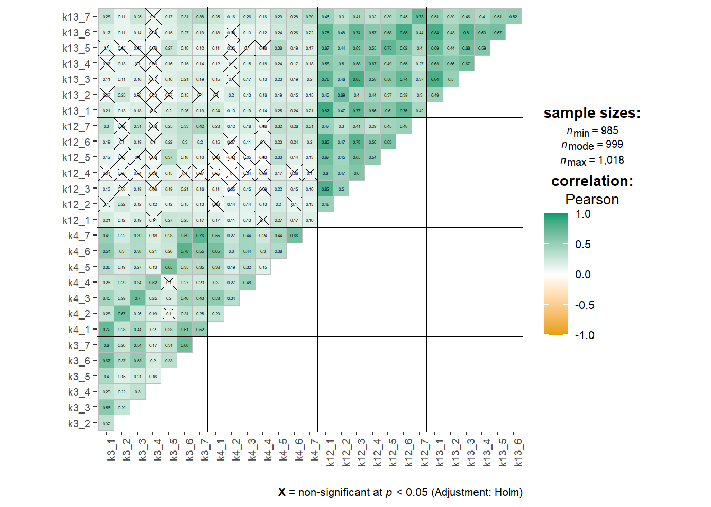
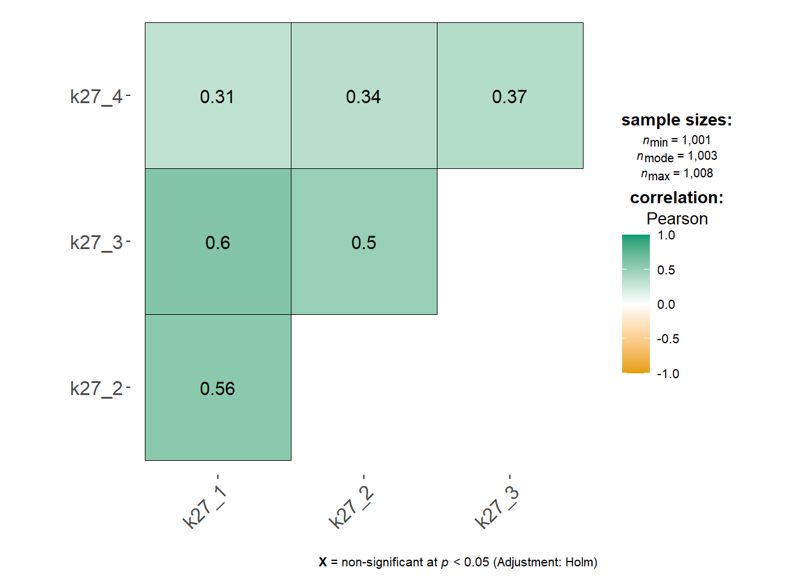
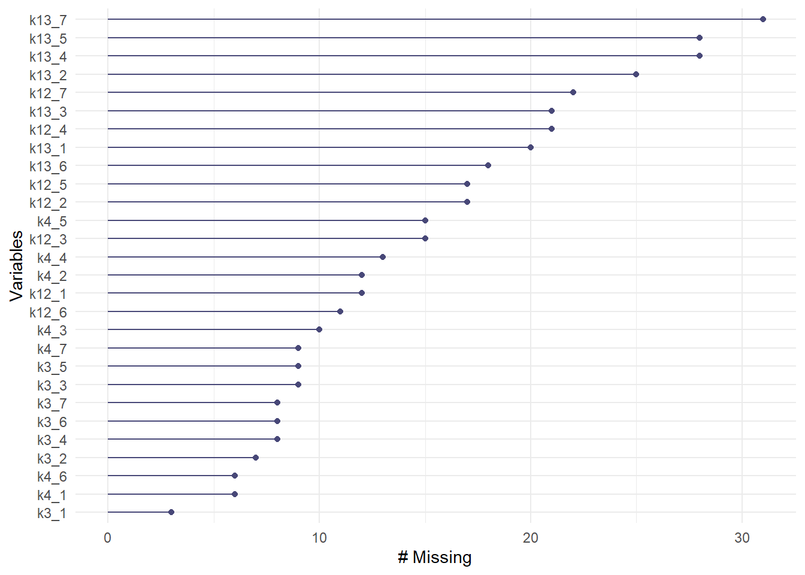

Koodi
library(ggstatsplot)
library(naniar)
library(HH)
library(EFAtools)
library(lavaan)
library(dynamic)
library(semTools)
library(tidyverse) # Tidyverse viimeiseksi, sillä HH:ssa useat dplyrin funktiot peittyvätTässä osiossa suoritamme tilastollisen validoinnin epäasiallisen ja väkivaltaisen kohtelun esiintyvyyden mittarille. Osio liittyy rekisteröityyn tutkimusraporttiin “Epäasiallisen ja väkivaltaisen kohtelun suomen- ja ruotsinkielisen mittarin validointi pelastus- ja ensihoitoalalla” (Saal, Silfverhuth & Huovinen, 2024). Viittaamme raportin rekisteröityihin protokolliin tekstissä.
library(ggstatsplot)
library(naniar)
library(HH)
library(EFAtools)
library(lavaan)
library(dynamic)
library(semTools)
library(tidyverse) # Tidyverse viimeiseksi, sillä HH:ssa useat dplyrin funktiot peittyvätdata <- read.csv2("output/anonymisoitudata.csv", tryLogical = FALSE)Raportin luvussa 2.1. (Kohderyhmä) esitimme neljä kohderyhmää, niiden määritelmät sekä niiden yhteenlasketut otoskoot (ks. raportin Taulukko 2). Nämä kohderyhmät määriteltiin kontrollimuuttujina luvussa 2.5. (Kontrollimuuttujat). Olemme poikenneet kohderyhmistä seuraavalla tavalla:
Järjestöjen kohderyhmään lisättiin myös alueellisten pelastusliittojen henkilöstö
Anonymisoinnissa jouduimme yhdistämään järjestöt ja koulutusorganisaatiot yhdeksi muuttujaksi, jotta heidän anonymiteettinsa säilyisivät.
Raportin luvussa 2.2. (Yhteydenottomenetelmät) esitimme jokaiselle kohderyhmälle eritellyt yhteydenottomenetelmät. Menetelmät tarkentuivat ja laajenivat rekisteröinnin jälkeen (ks. Luku 13). Poikkesimme suunnitelmasta seuraavalla tavalla:
Yhteydenottomenetelmät nimettiin uudelleen vastaamaan toteutettuja menetelmiä paremmin.
Vaihdoimme hyvinvointialueiden kirjaamot ja pelastuslaitosten viestinnät pelastuslaitosten ja ensihoidon yhteyshenkilöiksi.
Suomen Pelastusalan Keskusjärjestön kautta pelastusliittojen viestintään lähetetty viesti lähetettiin pelastusliittojen johdolle, samanaikaisesti kuin SPEK:n kautta pelastusliittojen johdolle lähetetty viesti.
Lisäsimme SPEK:n kautta sopimuspalokuntalaisten HAKA-järjestelmään ja siitä edelleen sopimuspalokunnille ja palokuntayhdistyksille välittetävä viesti. Tämä menetelmä laskettiin yhteyshenkilöiden ja viestinnän kautta välitettäväksi viestiksi.
Lisäsimme uutiskirjeet seuraavissa palveluissa: Palokuntaan.fi ja Pelastusopiston uutiskirjeet ensihoidolle, pelastustoimelle, onnettomuuksien ehkäisyyn sekä pelastustoimintaan. Nämä laskettiin yhteyshenkilöiden ja viestinnän kautta välitettäviksi viesteiksi.
Lisäsimme Spek.fi-sivustolla julkaistun tiedotteen sekä SSPL:n jäsenille lähetettävän tiedotteen. Nämä laskettiin median kautta välitettäviksi viesteiksi.
Lähetimme muistutusviestit järjestöjen ja koulutusorganisaatioiden johtajille, ensihoidon ja pelastuslaitosten yhteyshenkilöille sekä järjestöjen ja koulutusorganisaatioiden toimistoihin ja viestintään 3.9.2024.
Tiedonkeruu suoritettiin 15.8.-15.9.2024 välisenä aikana. Aineistoon kuuluu n = 1025 vastaajaa.
sukupuoli <- data |>
select(k31) |>
mutate(
k31 = factor(
k31,
labels = c("Nainen", "Mies", "Muu/EHV")
)
) |>
table() |>
as.data.frame() |>
mutate(
Pros = (Freq / nrow(data)) * 100
)Vastaajista 64.2 prosenttia (n = 658) olivat miehiä, 32.1 prosenttia (n = 329) olivat naisia ja 3.7 prosenttia (n = 38) muunsukupuolisia tai kieltäytyivät vastaamasta.
Verrattuna tunnettuihin sukupuolijakaumiin, aineistossa on yliedustettuna naissukupuoliset henkilöt.
kohderyhma <- data |>
select(k2) |>
mutate(
k2 = factor(
k2,
labels = c(
"Pelastuslaitos tai ensihoito",
"Sopimuspalokunta tai palokuntayhdistys",
"Järjestö, pelastusliitto tai koulu")
)
) |>
table() |>
as.data.frame() |>
mutate(
Pros = (Freq / nrow(data)) * 100
)Vastaajista 58.8 prosenttia (n = 603) olivat pelastuslaitokselta tai ensihoidosta, 33.3 prosenttia (n = 341) olivat sopimuspalokunnista tai palokuntayhdistyksistä ja 7.9 prosenttia (n = 81) olivat järjestöistä, pelastusliitoista tai koulutusorganisaatioista.
Kohderyhmätaulukon mukaan pelastuslaitosten ja ensihoidon osuus koko kohderyhmästä on noin 23,9 prosenttia, sopimuspalokuntien ja palokuntayhdistysten osuus noin 73,8 prosenttia, ja yhdistysten sekä koulutusorganisaatioiden yhteenlaskettu osuus noin 2,2 prosenttia. Aineistossamme on selkeästi yliedustettuina pelastuslaitokset ja ensihoito sekä hieman pienemmässä määrässä järjestöt, liitot ja koulutusorganisaatiot, ja aliedustettuina sopimuspalokunnat ja palokuntayhdistykset.
ophenk_n <- data |>
filter(Organisaatioasema == 2) |>
filter(k2 == 1) |>
nrow() - 70 # 70 henkilöä ovat alinta johtoa, eivätkä vastanneet suorittavan henkilöstön osuuteen. Jotta prosenttiosuudet olisivat oikein, arvoa on korjattava tämän verran.
ammattiasema <- data |>
filter(Organisaatioasema == 2) |>
select(k40) |>
mutate(
k40 = factor(
k40,
levels = c(1, 2, 3, -1),
labels = c(
"Pelastaja",
"Ensihoitaja",
"Muu",
"Sopimuspalokuntalainen operatiivisessa toiminnassa"
)
)
) |>
table() |>
as.data.frame() |>
mutate(
Pros = (Freq / ophenk_n) * 100
)Operatiivista toimintaa suorittavasta pelastuslaitosten ja ensihoidon henkilöstöstä (n = 3581) 35.2 prosenttia (n = 126) olivat pelastajia, 58.7 prosenttia (n = 210) olivat ensihoitajia ja 6.1 prosenttia (n = 22) ilmoittivat muun ammattiryhmän.
1 Operatiiviseen henkilöstöön kuuluvat sekä suorittava henkilöstö (pelastajat, ensihoitajat) että alin johto (ryhmänjohtajat). Alin johto ei kuitenkaan kyselyvirheen takia vastanneet kysymykseen suorittavalle henkilöstölle. Tämän takia määrät ja prosenttiosuudet eivät vastaa todellisia. Prosenttiosuudet on laskettu käsin jakamalla kunkin ryhmän osiot oikealla otoskoolla (n = 428 operatiivista henkilöstöä - 70 alinta johtoa = 358 suorittavaa henkilöstöä).
Kohderyhmätaulukon mukaisesti pelastajien osuus pelastuslaitosten henkilöstöstä on noin 49,4 prosenttia, ensihoitajien osuus noin 42,0 prosenttia ja muun henkilöstön osuus noin 8,6 prosenttia. Otoksessamme ensihoitajat ovat lievästi yliedustettuna ja pelastajat vastaavasti aliedustettuna, muun henkilöstön osuus vastaa käytännössä populaation osuutta.
kieli <- data |>
select(Kieliversio) |>
mutate(
Kieliversio = factor(
Kieliversio,
labels = c(
"Suomi",
"Ruotsi"
)
)
) |>
table() |>
as.data.frame() |>
mutate(
Pros = (Freq / nrow(data)) * 100
)Vastaajista 93.8 prosenttia (n = 961) vastasivat suomeksi ja 6.2 prosenttia (n = 64) vastasivat ruotsiksi. Vastauskieli ei välttämättä edusta äidinkielen tai käytetyn kielen jakautumista kohdepopulaatiossa.
yhteydenotto <- data |>
select(Linkkiversio) |>
mutate(
Linkkiversio = factor(
Linkkiversio,
labels = c(
"Johdon kautta",
"Henkilöstön kautta",
"Median kautta"
)
)
) |>
table() |>
as.data.frame() |>
mutate(
Pros = (Freq / nrow(data)) * 100
)Vastaajista 23.7 prosenttia (n = 243) vastasivat johdon kautta välitettyyn linkkiin, 40.4 prosenttia (n = 414) vastasivat yhteyshenkilöiden tai toimistojen kautta välitettyyn linkkiin, ja 35.9 prosenttia (n = 368) vastasivat median kautta välitettyyn linkkiin.
# Korjataan muuttujien järjestys putkessa myöhemmin
jarjestys <- c(
"k3_1", "k3_2", "k3_3", "k3_4", "k3_5", "k3_6", "k3_7",
"k4_1", "k4_2", "k4_3", "k4_4", "k4_5", "k4_6", "k4_7",
"k12_1", "k12_2", "k12_3", "k12_4", "k12_5", "k12_6", "k12_7",
"k13_1", "k13_2", "k13_3", "k13_4", "k13_5", "k13_6", "k13_7"
)
kohtelu <- data |>
select(k3_1:k4_7, k12_1:k13_7) |>
summarise(
across(
everything(),
list(
mean = ~ round(mean(.x, na.rm = TRUE), digits = 2),
median = ~ median(.x, na.rm = TRUE),
sd = ~ round(sd(.x, na.rm = TRUE), digits = 2),
n = ~ sum(!is.na(.x))
)
)
) |>
pivot_longer(
cols = everything(),
names_to = c("variable", "statistic"),
names_pattern = "^(.*_\\d+)_(.*)$"
) |>
pivot_wider(
names_from = statistic,
values_from = value
) |>
arrange(
factor(variable, levels = jarjestys)
)
colnames(kohtelu) <- c("Muuttuja", "Keskiarvo", "Mediaani", "Keskihajonta", "Validi N")
kohtelu |>
knitr::kable()| Muuttuja | Keskiarvo | Mediaani | Keskihajonta | Validi N |
|---|---|---|---|---|
| k3_1 | 1.42 | 1 | 0.87 | 1022 |
| k3_2 | 1.08 | 1 | 0.31 | 1018 |
| k3_3 | 1.16 | 1 | 0.53 | 1016 |
| k3_4 | 1.03 | 1 | 0.17 | 1017 |
| k3_5 | 1.16 | 1 | 0.55 | 1016 |
| k3_6 | 1.69 | 1 | 1.06 | 1017 |
| k3_7 | 1.47 | 1 | 1.01 | 1017 |
| k4_1 | 1.49 | 1 | 0.88 | 1019 |
| k4_2 | 1.08 | 1 | 0.33 | 1013 |
| k4_3 | 1.17 | 1 | 0.52 | 1015 |
| k4_4 | 1.03 | 1 | 0.19 | 1012 |
| k4_5 | 1.25 | 1 | 0.62 | 1010 |
| k4_6 | 1.72 | 1 | 1.05 | 1019 |
| k4_7 | 1.51 | 1 | 0.98 | 1016 |
| k12_1 | 1.68 | 1 | 1.06 | 1013 |
| k12_2 | 1.11 | 1 | 0.34 | 1008 |
| k12_3 | 1.48 | 1 | 0.87 | 1010 |
| k12_4 | 1.19 | 1 | 0.51 | 1004 |
| k12_5 | 1.30 | 1 | 0.73 | 1008 |
| k12_6 | 1.81 | 1 | 1.19 | 1014 |
| k12_7 | 1.21 | 1 | 0.61 | 1003 |
| k13_1 | 1.69 | 1 | 1.07 | 1005 |
| k13_2 | 1.12 | 1 | 0.38 | 1000 |
| k13_3 | 1.54 | 1 | 0.97 | 1004 |
| k13_4 | 1.23 | 1 | 0.52 | 997 |
| k13_5 | 1.35 | 1 | 0.76 | 997 |
| k13_6 | 1.80 | 1 | 1.17 | 1007 |
| k13_7 | 1.22 | 1 | 0.62 | 994 |
kohtelu_korr <- data |>
select(k3_1:k4_7, k12_1:k13_7) |>
cor(method = "pearson", use = "pairwise.complete.obs")
data |>
select(k3_1:k4_7, k12_1:k13_7) |>
ggcorrmat(
ggcorrplot.args = list(lab_size = 1, tl.cex = 7, tl.srt = 90)
) +
geom_vline(xintercept = 7.5, color = "black", size = 0.5) +
geom_vline(xintercept = 14.5, color = "black", size = 0.5) +
geom_vline(xintercept = 21.5, color = "black", size = 0.5) +
geom_hline(yintercept = 6.5, color = "black", size = 0.5) +
geom_hline(yintercept = 13.5, color = "black", size = 0.5) +
geom_hline(yintercept = 20.5, color = "black", size = 0.5)
Epäasiallisen ja väkivaltaisen kohtelun mittarit näyttävät korreloivan kahdessa osiossa: organisaatiosisäiset mittarit korreloivat toistensa kanssa merkitsevästi ja keskikokoisilla tai jopa suurilla kerroimilla, ja sama koskee organisaatioulkoisia mittareita. Mittarit korreloivat keskenään kuitenkin heikommin ja useammin ei-merkitsevästi, kuten näkyy korrelelogramin ylävasemmasta kulmasta (Kuva 25.1).
Korrelaatioiden vahvuudet vaihtelevat välillä \(r = -0.0086432 - 0.8676319\). Pääsääntöisesti korrelaatiot ovat positiivisia. Korrelaatiomatriisin determinantti on \(\det A = 1.5871233\times 10^{-10}\).
# Korjataan muuttujien järjestys putkessa myöhemmin
jarjestys <- c("k27_1", "k27_2", "k27_3", "k27_4")
uupumus <- data |>
select(k27_1:k27_4) |>
summarise(
across(
everything(),
list(
mean = ~ round(mean(.x, na.rm = TRUE), digits = 2),
median = ~ median(.x, na.rm = TRUE),
sd = ~ round(sd(.x, na.rm = TRUE), digits = 2),
n = ~ sum(!is.na(.x))
)
)
) |>
pivot_longer(
cols = everything(),
names_to = c("variable", "statistic"),
names_pattern = "^(.*_\\d+)_(.*)$"
) |>
pivot_wider(
names_from = statistic,
values_from = value
) |>
arrange(
factor(variable, levels = jarjestys)
)
colnames(uupumus) <- c("Muuttuja", "Keskiarvo", "Mediaani", "Keskihajonta", "Validi N")
uupumus |>
knitr::kable()| Muuttuja | Keskiarvo | Mediaani | Keskihajonta | Validi N |
|---|---|---|---|---|
| k27_1 | 2.25 | 2 | 0.99 | 1008 |
| k27_2 | 2.04 | 2 | 0.99 | 1005 |
| k27_3 | 2.05 | 2 | 0.87 | 1010 |
| k27_4 | 1.67 | 2 | 0.80 | 1005 |
uupumus_korr <- data |>
select(k27_1:k27_4) |>
cor(method = "pearson", use = "pairwise.complete.obs")
data |>
select(k27_1:k27_4) |>
ggcorrmat()
Korrelaatiot ovat kaikki merkitsevästi positiivisia ja vaihtelevat välillä \(r = 0.3085461 - 0.5980133\). Korrelaatiomatriisin determinantti on \(\det A = 0.3402493\).
valitut <- data |>
select(k3_1:k4_7, k12_1:k13_7)
puuttuvat_valitut <- data |>
select(k3_1:k4_7, k12_1:k13_7, k2, k40, Kieliversio, Linkkiversio) |>
mutate(
across(
k3_1:k13_7,
~ case_match(
.x,
NA ~ 1,
.default = 0
)
)
)gg_miss_var(valitut)
gg_miss_upset(
valitut,
nsets = 28,
point.size = 1.0,
text.scale = 0.5
)
Puuttuvia arvoja esiintyy eniten organisaation ulkopuolelta tulleen kollegahavaintojen muuttujien ryhmässä (Kuva 25.3). Vähiten esiintyy vastaavasti organisaation sisällä omakohtaisten kokemusten ryhmässä.
Upset-kuvio (Kuva 25.4) osoittaa, että kun organisaatiosisäisillä muuttujilla puuttuu vastaus, puute heijastuu usein muihin organisaatiosisäisiin muuttujiin. Samalla tavalla organisaatioulkoisten muuttujien puute heijastuu toisiin organisaatioulkoisiin muuttujiin.
valitut |>
mcar_test() |>
knitr::kable()| statistic | df | p.value | missing.patterns |
|---|---|---|---|
| 2024.162 | 1333 | 0 | 61 |
Littlen MCAR-testi on merkitsevä, osoittaen, että puuttuvat vastaukset mitä luultavammin eivät ole täysin satunnaisesti puuttuvia (engl. missing completely at random) (p < .05). Merkitsevyys voi osittain johtua suuresta otoskoosta, mutta todisteet osoittaisivat kuitenkin, että puuttuvissa vastauksissa on jonkin tapaista systematiikkaa.
data_long <- puuttuvat_valitut |>
pivot_longer(
cols = k3_1:k13_7,
names_to = "variable",
values_to = "value"
)
kontingenssi <- data_long |>
filter(value == 1) |>
group_by(variable, k2) |>
summarise(count = n(), .groups = "drop") |>
pivot_wider(
names_from = k2,
values_from = count,
values_fill = 0
)
khiinelio <- data_long |>
group_by(variable) |>
summarise(
khii2 = list(
chisq.test(table(value, k2))
),
.groups = "drop"
) |>
mutate(
p = map_dbl(khii2, ~ .x$p.value),
khii2 = map_dbl(khii2, ~ .x$statistic)
) |>
select(variable, p, khii2)
kontingenssi |>
left_join(khiinelio, by = "variable") |>
knitr::kable()| variable | 1 | 2 | 3 | p | khii2 |
|---|---|---|---|---|---|
| k12_1 | 7 | 1 | 4 | 0.0022352 | 12.2068153 |
| k12_2 | 13 | 2 | 2 | 0.1617400 | 3.6435303 |
| k12_3 | 9 | 4 | 2 | 0.6800659 | 0.7711310 |
| k12_4 | 14 | 4 | 3 | 0.2681367 | 2.6325167 |
| k12_5 | 12 | 3 | 2 | 0.3677684 | 2.0006036 |
| k12_6 | 8 | 3 | 0 | 0.5056236 | 1.3639256 |
| k12_7 | 15 | 4 | 3 | 0.2456391 | 2.8077836 |
| k13_1 | 14 | 4 | 2 | 0.4436029 | 1.6256511 |
| k13_2 | 19 | 4 | 2 | 0.1668432 | 3.5814016 |
| k13_3 | 14 | 5 | 2 | 0.6467029 | 0.8717365 |
| k13_4 | 21 | 5 | 2 | 0.1867824 | 3.3556221 |
| k13_5 | 21 | 5 | 2 | 0.1867824 | 3.3556221 |
| k13_6 | 12 | 5 | 1 | 0.7846554 | 0.4850212 |
| k13_7 | 25 | 4 | 2 | 0.0358577 | 6.6563953 |
| k3_1 | 3 | 0 | 0 | 0.3489479 | 2.1056654 |
| k3_2 | 6 | 1 | 0 | 0.3351516 | 2.1863447 |
| k3_3 | 8 | 1 | 0 | 0.1779945 | 3.4520049 |
| k3_4 | 6 | 2 | 0 | 0.5595486 | 1.1612497 |
| k3_5 | 8 | 1 | 0 | 0.1779945 | 3.4520049 |
| k3_6 | 6 | 2 | 0 | 0.5595486 | 1.1612497 |
| k3_7 | 6 | 2 | 0 | 0.5595486 | 1.1612497 |
| k4_1 | 4 | 1 | 1 | 0.5628028 | 1.1496518 |
| k4_2 | 9 | 1 | 2 | 0.1360695 | 3.9891789 |
| k4_3 | 7 | 1 | 2 | 0.1550611 | 3.7278718 |
| k4_4 | 8 | 3 | 2 | 0.5065442 | 1.3602875 |
| k4_5 | 11 | 2 | 2 | 0.2309698 | 2.9309370 |
| k4_6 | 5 | 1 | 0 | 0.4509169 | 1.5929444 |
| k4_7 | 4 | 2 | 3 | 0.0175697 | 8.0831625 |
Taulukon 25.4 mukaan useimpien muuttujien puuttuvien arvojen määrät eivät eroa kohderyhmien välillä merkitsevästi. Poikkeuksena ovat muuttujat k12_1, k13_7 ja k4_7, eli organisaatioulkoisen omakohtaisesti koetun verbaalisen väkivallan, organisaatioulkoisen kollegahavaitun syrjinnän sekä organisaatiosisäisen kollegahavaitun syrjinnän muuttujat. On kuitenkin huomattava, että määrät ovat hyvin pieniä, ja käytännössä jokainen testi sisältää odotettuja soluja, joiden koot ovat alle 5 havaintoa, jolloin khii neliö -testi ei ole luotettava riippuvuustesti. Poikkeuksena voidaan nähdä organisaatioulkoisen kollegahavaitun syrjinnän muuttuja, jossa on moninkertaisesti enemmän puuttuvia arvoja pelastuslaitosten ja ensihoidon kohderyhmässä kuin muissa.
data_long <- puuttuvat_valitut |>
filter(between(k40, 1, 2)) |>
pivot_longer(
cols = k3_1:k13_7,
names_to = "variable",
values_to = "value"
)
kontingenssi <- data_long |>
filter(value == 1) |>
group_by(variable, k40) |>
summarise(count = n(), .groups = "drop") |>
pivot_wider(
names_from = k40,
values_from = count,
values_fill = 0
)
khiinelio <- data_long |>
group_by(variable) |>
summarise(
khii2 = list(
chisq.test(table(value, k40))
),
.groups = "drop"
) |>
mutate(
p = map_dbl(khii2, ~ .x$p.value),
khii2 = map_dbl(khii2, ~ .x$statistic)
) |>
select(variable, p, khii2)
kontingenssi |>
left_join(khiinelio, by = "variable") |>
knitr::kable()| variable | 1 | 2 | p | khii2 |
|---|---|---|---|---|
| k12_1 | 1 | 0 | 0.7959562 | 0.0668657 |
| k12_2 | 3 | 2 | 0.5607724 | 0.3383686 |
| k12_3 | 3 | 0 | 0.0995266 | 2.7131131 |
| k12_4 | 3 | 2 | 0.5607724 | 0.3383686 |
| k12_5 | 2 | 2 | 1.0000000 | 0.0000000 |
| k12_6 | 1 | 1 | 1.0000000 | 0.0000000 |
| k12_7 | 5 | 3 | 0.2675494 | 1.2292683 |
| k13_1 | 4 | 3 | 0.4899684 | 0.4765957 |
| k13_2 | 5 | 3 | 0.2675494 | 1.2292683 |
| k13_3 | 4 | 2 | 0.2874954 | 1.1313131 |
| k13_4 | 5 | 6 | 0.8122928 | 0.0563916 |
| k13_5 | 5 | 5 | 0.6189388 | 0.2473620 |
| k13_6 | 3 | 3 | 0.8315404 | 0.0452525 |
| k13_7 | 6 | 6 | 0.5437005 | 0.3687243 |
| k3_1 | 1 | 1 | 1.0000000 | 0.0000000 |
| k3_2 | 2 | 1 | 0.6532704 | 0.2018018 |
| k3_3 | 4 | 2 | 0.2874954 | 1.1313131 |
| k3_4 | 2 | 1 | 0.6532704 | 0.2018018 |
| k3_5 | 2 | 2 | 1.0000000 | 0.0000000 |
| k3_6 | 2 | 1 | 0.6532704 | 0.2018018 |
| k3_7 | 1 | 1 | 1.0000000 | 0.0000000 |
| k4_1 | 1 | 1 | 1.0000000 | 0.0000000 |
| k4_2 | 2 | 3 | 1.0000000 | 0.0000000 |
| k4_3 | 2 | 2 | 1.0000000 | 0.0000000 |
| k4_4 | 2 | 2 | 1.0000000 | 0.0000000 |
| k4_5 | 2 | 3 | 1.0000000 | 0.0000000 |
| k4_6 | 1 | 1 | 1.0000000 | 0.0000000 |
| k4_7 | 1 | 0 | 0.7959562 | 0.0668657 |
Taulukon 25.5 mukaan mikään muuttuja ei eroa merkitsevästi puuttuvien vastausten määrässä pelastajien ja ensihoitajien välillä. Puuttuvia arvoja on hyvin vähän, joten khii neliö-testit eivät ole luotettavia, mutta puuttuminen ei myöskään oletettavasti aiheuta haittaa mallille myöhemmässä vaiheessa.
data_long <- puuttuvat_valitut |>
pivot_longer(
cols = k3_1:k13_7,
names_to = "variable",
values_to = "value"
)
kontingenssi <- data_long |>
filter(value == 1) |>
group_by(variable, Kieliversio) |>
summarise(count = n(), .groups = "drop") |>
pivot_wider(
names_from = Kieliversio,
values_from = count,
values_fill = 0
)
khiinelio <- data_long |>
group_by(variable) |>
summarise(
khii2 = list(
chisq.test(table(value, Kieliversio))
),
.groups = "drop"
) |>
mutate(
p = map_dbl(khii2, ~ .x$p.value),
khii2 = map_dbl(khii2, ~ .x$statistic)
) |>
select(variable, p, khii2)
kontingenssi |>
left_join(khiinelio, by = "variable") |>
knitr::kable()| variable | 1 | 2 | p | khii2 |
|---|---|---|---|---|
| k12_1 | 12 | 0 | 0.7648168 | 0.0894976 |
| k12_2 | 17 | 0 | 0.5703435 | 0.3221081 |
| k12_3 | 15 | 0 | 0.6388194 | 0.2202896 |
| k12_4 | 21 | 0 | 0.4597504 | 0.5465023 |
| k12_5 | 16 | 1 | 1.0000000 | 0.0000000 |
| k12_6 | 10 | 1 | 1.0000000 | 0.0000000 |
| k12_7 | 20 | 2 | 0.9103929 | 0.0126659 |
| k13_1 | 18 | 2 | 0.8146192 | 0.0549767 |
| k13_2 | 23 | 2 | 1.0000000 | 0.0000000 |
| k13_3 | 19 | 2 | 0.8634107 | 0.0295958 |
| k13_4 | 26 | 2 | 1.0000000 | 0.0000000 |
| k13_5 | 26 | 2 | 1.0000000 | 0.0000000 |
| k13_6 | 15 | 3 | 0.1762203 | 1.8292148 |
| k13_7 | 29 | 2 | 1.0000000 | 0.0000000 |
| k3_1 | 3 | 0 | 1.0000000 | 0.0000000 |
| k3_2 | 7 | 0 | 1.0000000 | 0.0000000 |
| k3_3 | 9 | 0 | 0.9316837 | 0.0073491 |
| k3_4 | 8 | 0 | 1.0000000 | 0.0000000 |
| k3_5 | 9 | 0 | 0.9316837 | 0.0073491 |
| k3_6 | 8 | 0 | 1.0000000 | 0.0000000 |
| k3_7 | 8 | 0 | 1.0000000 | 0.0000000 |
| k4_1 | 5 | 1 | 0.8319871 | 0.0450092 |
| k4_2 | 12 | 0 | 0.7648168 | 0.0894976 |
| k4_3 | 10 | 0 | 0.8702226 | 0.0266916 |
| k4_4 | 13 | 0 | 0.7191466 | 0.1293119 |
| k4_5 | 15 | 0 | 0.6388194 | 0.2202896 |
| k4_6 | 6 | 0 | 1.0000000 | 0.0000000 |
| k4_7 | 9 | 0 | 0.9316837 | 0.0073491 |
Taulukon 25.6 mukaan mikään muuttuja ei eroa merkitsevästi puuttuvien vastausten määrässä suomen- ja ruotsinkielisen kyselyn täyttäneiden välillä. Puuttuvia arvoja on hyvin vähän varsinkin ruotsinkielisen version täyttäneiden kesken, joten khii neliö-testit eivät ole luotettavia, mutta puuttuminen ei myöskään oletettavasti aiheuta haittaa mallille myöhemmässä vaiheessa.
data_long <- puuttuvat_valitut |>
pivot_longer(
cols = k3_1:k13_7,
names_to = "variable",
values_to = "value"
)
kontingenssi <- data_long |>
filter(value == 1) |>
group_by(variable, Linkkiversio) |>
summarise(count = n(), .groups = "drop") |>
pivot_wider(
names_from = Linkkiversio,
values_from = count,
values_fill = 0
)
khiinelio <- data_long |>
group_by(variable) |>
summarise(
khii2 = list(
chisq.test(table(value, Linkkiversio))
),
.groups = "drop"
) |>
mutate(
p = map_dbl(khii2, ~ .x$p.value),
khii2 = map_dbl(khii2, ~ .x$statistic)
) |>
select(variable, p, khii2)
kontingenssi |>
left_join(khiinelio, by = "variable") |>
knitr::kable()| variable | 1 | 2 | 3 | p | khii2 |
|---|---|---|---|---|---|
| k12_1 | 4 | 3 | 5 | 0.5223076 | 1.2989972 |
| k12_2 | 6 | 5 | 6 | 0.4731774 | 1.4965698 |
| k12_3 | 5 | 4 | 6 | 0.5025804 | 1.3759993 |
| k12_4 | 6 | 8 | 7 | 0.8687793 | 0.2813323 |
| k12_5 | 4 | 5 | 8 | 0.5725345 | 1.1153644 |
| k12_6 | 2 | 3 | 6 | 0.4288419 | 1.6933338 |
| k12_7 | 7 | 8 | 7 | 0.6641201 | 0.8185845 |
| k13_1 | 4 | 8 | 8 | 0.8983378 | 0.2144182 |
| k13_2 | 8 | 9 | 8 | 0.6143776 | 0.9742910 |
| k13_3 | 6 | 8 | 7 | 0.8687793 | 0.2813323 |
| k13_4 | 8 | 11 | 9 | 0.8149292 | 0.4093081 |
| k13_5 | 6 | 12 | 10 | 0.9480444 | 0.1067078 |
| k13_6 | 3 | 7 | 8 | 0.6819211 | 0.7656827 |
| k13_7 | 9 | 13 | 9 | 0.6631564 | 0.8214887 |
| k3_1 | 1 | 2 | 0 | 0.4248211 | 1.7121741 |
| k3_2 | 2 | 3 | 2 | 0.9109817 | 0.1864650 |
| k3_3 | 3 | 5 | 1 | 0.2972684 | 2.4262396 |
| k3_4 | 2 | 3 | 3 | 0.9860528 | 0.0280907 |
| k3_5 | 2 | 3 | 4 | 0.8585899 | 0.3049279 |
| k3_6 | 2 | 3 | 3 | 0.9860528 | 0.0280907 |
| k3_7 | 2 | 3 | 3 | 0.9860528 | 0.0280907 |
| k4_1 | 3 | 2 | 1 | 0.2928304 | 2.4563236 |
| k4_2 | 5 | 4 | 3 | 0.3322652 | 2.2036434 |
| k4_3 | 4 | 4 | 2 | 0.3980353 | 1.8424292 |
| k4_4 | 3 | 6 | 4 | 0.9016147 | 0.2071359 |
| k4_5 | 6 | 6 | 3 | 0.2494086 | 2.7773252 |
| k4_6 | 1 | 3 | 2 | 0.8714117 | 0.2752814 |
| k4_7 | 5 | 2 | 2 | 0.0780800 | 5.1000432 |
Taulukon 25.7 mukaan mikään muuttuja ei eroa merkitsevästi puuttuvien vastausten määrässä yhteydenottomenetelmien välillä. Poikkeuksena voi olla muuttuja k4_7, eli organisaatiosisäisesti kollegahavaittu syrjintä, joka mahdollisesti eroaa menetelmien välillä. P-arvo on kuitenkin yli vakiintuneen raja-arvon (p = .078), ja datan vähyys heikentää testin luotettavuutta.
set.seed(987320)
otos <- sample(c(1, 2), replace = TRUE, nrow(data), prob = c(0.3, 0.7))
data <- data |>
add_column(
otos = otos,
.after = "ID"
)
data.efa <- data |>
filter(otos == 1)
data.cfa <- data |>
filter(otos == 2)# Mahalanobiksen etäisyys ja merkitsevyys
data.efa$mahalanobis <- mahalanobis(
x = data.efa |> select(k3_1:k4_7, k12_1:k13_7),
center = data.efa |> select(k3_1:k4_7, k12_1:k13_7) |> colMeans(na.rm = TRUE),
cov = data.efa |> select(k3_1:k4_7, k12_1:k13_7) |> cov(use = "pairwise.complete.obs", method = "pearson")
)
data.efa$mahalanobis.p <- data.efa |>
select(mahalanobis) |>
unlist() |>
as.double() |>
pchisq(
df = data.efa |> select(k3_1:k4_7, k12_1:k13_7) |> ncol() - 1
)
# Kerätään kaikki tulokset yhteen listaan
tulokset.efa.sopivuus <- list()
# Mahalanobiksen pohjalta poistettavat vastaajat
tulokset.efa.sopivuus$poisto_n <- data.efa |>
filter(mahalanobis.p < .001) |>
summarise(n()) |>
as.numeric()
# Bartlettin testi
tulokset.efa.sopivuus$bart <- data.efa |>
select(k3_1:k4_7, k12_1:k13_7) |>
BARTLETT()
# KMO-suure
tulokset.efa.sopivuus$kmosuure <- data.efa |>
select(k3_1:k4_7, k12_1:k13_7) |>
KMO()
# Korrelaatiomatriisin determinantti
tulokset.efa.sopivuus$determinantti <- data.efa |>
select(k3_1:k4_7, k12_1:k13_7) |>
cor(method = "pearson", use = "pairwise.complete.obs") |>
det()
# VIF-arvot
tulokset.efa.sopivuus$vif <- data.efa |>
select(k3_1:k4_7, k12_1:k13_7) |>
vif()
# Hullin menetelmä
tulokset.efa.sopivuus$hull <- data.efa |>
select(k3_1:k4_7, k12_1:k13_7) |>
HULL(
method = "ML",
eigentype = "SMC",
decision_rule = "percentile"
)Mahalanobiksen etäisyyden merkitsevyystestaus (p < .001) osoittaa, että yhteensä 118 vastaajaa pitäisi poistaa mallista.
KMO-suureen koko on 0.8443061.
Bartlettin testi on merkitsevä (\(\chi^2 = 7379.8852978, \text{df} = 378, p = 0\)).
Korrelaatiomatriisin determinantti on 5.5931073^{-12}.
Hullin menetelmän tulokset riippuvat käytetystä sopivuusindeksistä. CAF-indeksi ehdottaa 2 faktoria, CFI ehdottaa 1 faktoria ja RMSEA ehdottaa 1 faktoria.
Tulokset osoittavat kolmea suurempaa ongelmaa: Mahalanobiksen etäisyyden mukaan noin kolmannes vastaajista pitäisi poistaa mallista, Hullin menetelmän tulokset ovat osittain ristiriitaisia ja ehdottavat joko yhtä tai kahta faktoria, ja korrelaatiomatriisin determinantti on koko aineistolle liian pieni ja osoittaa multikollineariteettia.
Jos vertaamme determinanttiongelmaa aikaisemmin tarkistettuun korrelaatiomatriisiin (Kuva 25.1), ongelmallisia korrelaatioita (r > 0.8) esiintyy vain organisaatioulkoisten muuttujien ryhmässä. Suurimpana ongelmana on omakohtaisesti koettujen ja kollegan kautta havaittujen kohtelujen korrelaatioissa, jossa suurin korrelaatio on jopa r = 0.87.
Tarkistimme, jos ongelma johtuu ensisijaisesti organisaatioulkoisten muuttujien tekokontekstiryhmien välisistä korrelaatioista poistamalla kollegan kautta havaitut muuttujat analyysista.
# Tehdään uusi df testausta varten
data.efa2 <- data.efa
# Mahalanobiksen etäisyys ja merkitsevyys
data.efa2$mahalanobis <- mahalanobis(
x = data.efa2 |> select(k3_1:k3_7, k12_1:k12_7),
center = data.efa2 |> select(k3_1:k3_7, k12_1:k12_7) |> colMeans(na.rm = TRUE),
cov = data.efa2 |> select(k3_1:k3_7, k12_1:k12_7) |> cov(use = "pairwise.complete.obs", method = "pearson")
)
data.efa2$mahalanobis.p <- data.efa2 |>
select(mahalanobis) |>
unlist() |>
as.double() |>
pchisq(
df = data.efa2 |> select(k3_1:k3_7, k12_1:k12_7) |> ncol() - 1
)
# Kerätään kaikki tulokset yhteen listaan
tulokset.efa2.sopivuus <- list()
# Mahalanobiksen pohjalta poistettavat vastaajat
tulokset.efa2.sopivuus$poisto_n <- data.efa2 |>
filter(mahalanobis.p < .001) |>
summarise(n()) |>
as.numeric()
# Bartlettin testi
tulokset.efa2.sopivuus$bart <- data.efa2 |>
select(k3_1:k3_7, k12_1:k12_7) |>
BARTLETT()
# KMO-suure
tulokset.efa2.sopivuus$kmosuure <- data.efa2 |>
select(k3_1:k3_7, k12_1:k12_7) |>
KMO()
# Korrelaatiomatriisin determinantti
tulokset.efa2.sopivuus$determinantti <- data.efa2 |>
select(k3_1:k3_7, k12_1:k12_7) |>
cor(method = "pearson", use = "pairwise.complete.obs") |>
det()
# VIF-arvot
tulokset.efa2.sopivuus$vif <- data.efa2 |>
select(k3_1:k3_7, k12_1:k12_7) |>
vif()
# Hullin menetelmä
tulokset.efa2.sopivuus$hull <- data.efa2 |>
select(k3_1:k3_7, k12_1:k12_7) |>
HULL(
method = "ML",
eigentype = "SMC",
decision_rule = "percentile"
)Mahalanobiksen etäisyyden merkitsevyystestaus (p < .001) osoittaa, että yhteensä 119 vastaajaa pitäisi poistaa mallista.
KMO-suureen koko on 0.8516718.
Bartlettin testi on merkitsevä (\(\chi^2 = 2315.2653036, \text{df} = 91, p = 0\)).
Korrelaatiomatriisin determinantti on 3.3631505^{-4}.
Hullin menetelmän tulokset riippuvat käytetystä sopivuusindeksistä. CAF-indeksi ehdottaa 1 faktoria, CFI ehdottaa 2 faktoria ja RMSEA ehdottaa 2 faktoria.
Koska tulokset osoittavat useita eri ristiriitoja, päätimme ajaa yhteensä 4 eri mallia kahdessa ryhmässä. Mallit 1A ja 1B käyttävät kaikkia 28 muuttujaa. Mallit 2A ja 2B käyttävät vain omakohtaisesti koettuja kokemuksia, eli 14 muuttujaa. A-malleissa sovitimme yhden faktorin mallin kaikille vastaajille (Mallit 1A, 2A) ja B-malleissa sovitimme kahden faktorin mallin kaikille vastaajille (Mallit 1B, 2B).
efa.malli.1A <- data.efa |>
select(k3_1:k4_7, k12_1:k13_7) |>
efa(
nfactors = 1,
rotation = "oblimin",
estimator = "ML",
missing = "fiml"
)
yhteenveto.efa.1A <- summary(
efa.malli.1A,
fit.measures = TRUE,
ci = TRUE,
efa = TRUE,
cutoff = 0.4,
dot.cutoff = 0
)
efa.malli.1B <- data.efa |>
select(k3_1:k4_7, k12_1:k13_7) |>
efa(
nfactors = 2,
rotation = "oblimin",
estimator = "ML",
missing = "fiml"
)
yhteenveto.efa.1B <- summary(
efa.malli.1B,
fit.measures = TRUE,
ci = TRUE,
efa = TRUE,
cutoff = 0.4,
dot.cutoff = 0
)
efa.malli.2A <- data.efa2 |>
select(k3_1:k3_7, k12_1:k12_7) |>
efa(
nfactors = 1,
rotation = "oblimin",
estimator = "ML",
missing = "fiml"
)
yhteenveto.efa.2A <- summary(
efa.malli.2A,
fit.measures = TRUE,
ci = TRUE,
efa = TRUE,
cutoff = 0.4,
dot.cutoff = 0
)
efa.malli.2B <- data.efa2 |>
select(k3_1:k3_7, k12_1:k12_7) |>
efa(
nfactors = 2,
rotation = "oblimin",
estimator = "ML",
missing = "fiml"
)
yhteenveto.efa.2B <- summary(
efa.malli.2B,
fit.measures = TRUE,
ci = TRUE,
efa = TRUE,
cutoff = 0.4,
dot.cutoff = 0
)yhteenveto.efa.1AThis is lavaan 0.6-18 -- running exploratory factor analysis
Estimator ML
Rotation method OBLIMIN OBLIQUE
Oblimin gamma 0
Rotation algorithm (rstarts) GPA (30)
Standardized metric TRUE
Row weights None
Number of observations 296
Number of missing patterns 23
Fit measures:
aic bic sabic chisq df pvalue cfi rmsea
nfactors = 1 12235.3 12545.29 12278.9 4015.661 350 0 0.486 0.19
Eigenvalues correlation matrix:
ev1 ev2 ev3 ev4 ev5 ev6 ev7 ev8
10.3354 4.7977 1.8275 1.3272 1.3022 1.1559 0.9191 0.8294
ev9 ev10 ev11 ev12 ev13 ev14 ev15 ev16
0.7153 0.5875 0.5241 0.4433 0.4316 0.3452 0.3324 0.2958
ev17 ev18 ev19 ev20 ev21 ev22 ev23 ev24
0.2750 0.2379 0.2290 0.1877 0.1713 0.1465 0.1376 0.1314
ev25 ev26 ev27 ev28
0.1141 0.1006 0.0683 0.0311
Standardized loadings: (* = significant at 1% level)
f1 unique.var communalities
k3_1 .* 0.940 0.060
k3_2 .* 0.944 0.056
k3_3 .* 0.934 0.066
k3_4 . 0.981 0.019
k3_5 .* 0.864 0.136
k3_6 .* 0.860 0.140
k3_7 .* 0.944 0.056
k4_1 .* 0.936 0.064
k4_2 .* 0.949 0.051
k4_3 .* 0.951 0.049
k4_4 .* 0.964 0.036
k4_5 .* 0.895 0.105
k4_6 .* 0.928 0.072
k4_7 .* 0.926 0.074
k12_1 0.909* 0.173 0.827
k12_2 0.626* 0.608 0.392
k12_3 0.890* 0.208 0.792
k12_4 0.774* 0.401 0.599
k12_5 0.726* 0.473 0.527
k12_6 0.869* 0.244 0.756
k12_7 0.571* 0.674 0.326
k13_1 0.905* 0.181 0.819
k13_2 0.599* 0.641 0.359
k13_3 0.887* 0.213 0.787
k13_4 0.761* 0.421 0.579
k13_5 0.764* 0.416 0.584
k13_6 0.868* 0.246 0.754
k13_7 0.587* 0.656 0.344
f1
Sum of squared loadings 9.428
Proportion of total 1.000
Proportion var 0.337
Cumulative var 0.337yhteenveto.efa.1BThis is lavaan 0.6-18 -- running exploratory factor analysis
Estimator ML
Rotation method OBLIMIN OBLIQUE
Oblimin gamma 0
Rotation algorithm (rstarts) GPA (30)
Standardized metric TRUE
Row weights None
Number of observations 296
Number of missing patterns 23
Fit measures:
aic bic sabic chisq df pvalue cfi rmsea
nfactors = 2 10910.16 11319.79 10967.78 2636.527 323 0 0.674 0.158
Eigenvalues correlation matrix:
ev1 ev2 ev3 ev4 ev5 ev6 ev7 ev8
10.3354 4.7977 1.8275 1.3272 1.3022 1.1559 0.9191 0.8294
ev9 ev10 ev11 ev12 ev13 ev14 ev15 ev16
0.7153 0.5875 0.5241 0.4433 0.4316 0.3452 0.3324 0.2958
ev17 ev18 ev19 ev20 ev21 ev22 ev23 ev24
0.2750 0.2379 0.2290 0.1877 0.1713 0.1465 0.1376 0.1314
ev25 ev26 ev27 ev28
0.1141 0.1006 0.0683 0.0311
Standardized loadings: (* = significant at 1% level)
f1 f2 unique.var communalities
k3_1 0.774* . 0.422 0.578
k3_2 0.478* . 0.750 0.250
k3_3 0.726* . 0.479 0.521
k3_4 0.445* . 0.810 0.190
k3_5 .* .* 0.775 0.225
k3_6 0.784* . 0.341 0.659
k3_7 0.679* . 0.543 0.457
k4_1 0.799* . 0.380 0.620
k4_2 .* . 0.830 0.170
k4_3 0.686* . 0.541 0.459
k4_4 0.402* . 0.828 0.172
k4_5 0.488* .* 0.697 0.303
k4_6 0.784* . 0.393 0.607
k4_7 0.675* . 0.534 0.466
k12_1 . 0.917* 0.167 0.833
k12_2 .* 0.571* 0.605 0.395
k12_3 . 0.913* 0.190 0.810
k12_4 . 0.789* 0.395 0.605
k12_5 . 0.735* 0.469 0.531
k12_6 . 0.858* 0.245 0.755
k12_7 . 0.580* 0.673 0.327
k13_1 . 0.889* 0.183 0.817
k13_2 . 0.559* 0.643 0.357
k13_3 .* 0.919* 0.191 0.809
k13_4 . 0.736* 0.426 0.574
k13_5 . 0.774* 0.413 0.587
k13_6 . 0.850* 0.250 0.750
k13_7 . 0.577* 0.661 0.339
f2 f1 total
Sum of sq (obliq) loadings 8.560 5.602 14.163
Proportion of total 0.604 0.396 1.000
Proportion var 0.306 0.200 0.506
Cumulative var 0.306 0.506 0.506
Factor correlations: (* = significant at 1% level)
f1 f2
f1 1.000
f2 0.302* 1.000 yhteenveto.efa.2AThis is lavaan 0.6-18 -- running exploratory factor analysis
Estimator ML
Rotation method OBLIMIN OBLIQUE
Oblimin gamma 0
Rotation algorithm (rstarts) GPA (30)
Standardized metric TRUE
Row weights None
Number of observations 296
Number of missing patterns 15
Fit measures:
aic bic sabic chisq df pvalue cfi rmsea
nfactors = 1 6346.139 6501.134 6367.939 799.948 77 0 0.675 0.18
Eigenvalues correlation matrix:
ev1 ev2 ev3 ev4 ev5 ev6 ev7 ev8 ev9 ev10
5.443 2.623 0.970 0.869 0.853 0.651 0.575 0.440 0.426 0.339
ev11 ev12 ev13 ev14
0.285 0.236 0.180 0.111
Standardized loadings: (* = significant at 1% level)
f1 unique.var communalities
k3_1 .* 0.953 0.047
k3_2 .* 0.956 0.044
k3_3 .* 0.938 0.062
k3_4 . 0.984 0.016
k3_5 0.411* 0.831 0.169
k3_6 .* 0.870 0.130
k3_7 .* 0.949 0.051
k12_1 0.917* 0.160 0.840
k12_2 0.599* 0.642 0.358
k12_3 0.912* 0.168 0.832
k12_4 0.784* 0.385 0.615
k12_5 0.761* 0.421 0.579
k12_6 0.875* 0.235 0.765
k12_7 0.563* 0.683 0.317
f1
Sum of squared loadings 4.824
Proportion of total 1.000
Proportion var 0.345
Cumulative var 0.345yhteenveto.efa.2BThis is lavaan 0.6-18 -- running exploratory factor analysis
Estimator ML
Rotation method OBLIMIN OBLIQUE
Oblimin gamma 0
Rotation algorithm (rstarts) GPA (30)
Standardized metric TRUE
Row weights None
Number of observations 296
Number of missing patterns 15
Fit measures:
aic bic sabic chisq df pvalue cfi rmsea
nfactors = 2 5844.368 6047.338 5872.915 272.177 64 0 0.906 0.108
Eigenvalues correlation matrix:
ev1 ev2 ev3 ev4 ev5 ev6 ev7 ev8 ev9 ev10
5.443 2.623 0.970 0.869 0.853 0.651 0.575 0.440 0.426 0.339
ev11 ev12 ev13 ev14
0.285 0.236 0.180 0.111
Standardized loadings: (* = significant at 1% level)
f1 f2 unique.var communalities
k3_1 0.803* . 0.386 0.614
k3_2 0.460* . 0.773 0.227
k3_3 0.721* . 0.483 0.517
k3_4 .* . 0.868 0.132
k3_5 .* .* 0.756 0.244
k3_6 0.794* . 0.326 0.674
k3_7 0.689* . 0.529 0.471
k12_1 . 0.914* 0.161 0.839
k12_2 . 0.558* 0.640 0.360
k12_3 . 0.929* 0.154 0.846
k12_4 . 0.804* 0.377 0.623
k12_5 . 0.767* 0.420 0.580
k12_6 . 0.849* 0.239 0.761
k12_7 . 0.559* 0.686 0.314
f2 f1 total
Sum of sq (obliq) loadings 4.422 2.780 7.202
Proportion of total 0.614 0.386 1.000
Proportion var 0.316 0.199 0.514
Cumulative var 0.316 0.514 0.514
Factor correlations: (* = significant at 1% level)
f1 f2
f1 1.000
f2 0.295* 1.000 28 muuttujan mallit istuvat huonommin kuin 14 muuttujan mallit. Yhden faktorin mallit (A-mallit) istuvat aina huonommin kuin kahden faktorin mallit (B-mallit), ottaen huomioon myös faktorin lisäämisestä nousseen seliteasteen.
Seliteasteet yhden faktorin malleilla ovat noin kolmannes kaikesta varianssista, kahden faktorin malleilla noin 50 prosenttia.
Kahden faktorin malleissa faktorien välinen korrelaatio on noin 0,3 (merkitsevä 1 % alfatasolla).
Useimmissa malleissa muuttuja k3_5 (organisaatiosisäisesti koettu seksuaalinen häirintä tai väkivalta) ei tahdo asettua faktoreille kunnolla. Malli 1B:ssä muuttuja lataa merkitsevästi molemmille faktoreille, mutta latauskoko on alle 0,3 molemmissa tapauksissa. Malli 2A:ssa muuttuja on ainoa organisaatiosisäisten muuttujien ryhmästä, jonka lataus yhden faktorin mallissa on yli 0,3 (lataus = 0,411, merkitsevä 1 % alfa-tasolla). Malli 2B:ssä muuttuja samoin kuin Malli 1B:ssä, eli merkitsevästi mutta alle 0,3 tason molemmille faktoreille.
Kokonaisuudessaan parhaiten sopiva malli on Malli 2B (14 omakohtaisen kokemuksen muuttujaa, kaksi faktoria). Teoreettisista syistä näemme, että muuttujat k3_4 ja k3_5 (organisaatiosisäisesti koettu fyysinen väkivalta sekä seksuaalinen häirintä tai väkivalta) asettuvat ensimmäiseen faktoriin, vaikka lataukset ovat matalampia. Heikot lataukset voivat osittain johtua pienestä varianssista, sillä varsinkin fyysisen väkivallan kohdalla kokemuksia on aineistossa erittäin vähän.
On kuitenkin huomattava, että sopivuusindeksit eivät ole varsin hyviä. Mallin CFI-suure on 0.906 (alle yleisen raja-arvon 0.95) ja RMSEA on 0.108 (yli yleisen raja-arvon 0.05).
Jatkamme toiseen osatutkimukseen seuraavalla mallilla:
efa.malli.2Bekspl <- data.efa2 |>
filter(mahalanobis.p > 0.001) |>
select(k3_1:k3_7, k12_1:k12_7) |>
efa(
nfactors = 2,
rotation = "oblimin",
estimator = "ML",
missing = "fiml"
)
summary(
efa.malli.2Bekspl,
fit.measures = TRUE,
ci = TRUE,
efa = TRUE,
cutoff = 0.4,
dot.cutoff = 0
)This is lavaan 0.6-18 -- running exploratory factor analysis
Estimator ML
Rotation method OBLIMIN OBLIQUE
Oblimin gamma 0
Rotation algorithm (rstarts) GPA (30)
Standardized metric TRUE
Row weights None
Number of observations 161
Number of missing patterns 1
Fit measures:
aic bic sabic chisq df pvalue cfi rmsea
nfactors = 2 4297.339 4466.816 4292.702 166.987 64 0 0.902 0.102
Eigenvalues correlation matrix:
ev1 ev2 ev3 ev4 ev5 ev6 ev7 ev8 ev9 ev10
4.629 2.986 0.993 0.943 0.891 0.712 0.631 0.480 0.450 0.386
ev11 ev12 ev13 ev14
0.311 0.237 0.205 0.146
Standardized loadings: (* = significant at 1% level)
f1 f2 unique.var communalities
k3_1 0.771* .* 0.409 0.591
k3_2 0.449* . 0.793 0.207
k3_3 0.763* . 0.410 0.590
k3_4 .* . 0.845 0.155
k3_5 .* .* 0.779 0.221
k3_6 0.751* . 0.418 0.582
k3_7 0.623* . 0.615 0.385
k12_1 . 0.878* 0.228 0.772
k12_2 . 0.521* 0.701 0.299
k12_3 . 0.899* 0.196 0.804
k12_4 . 0.777* 0.402 0.598
k12_5 . 0.742* 0.449 0.551
k12_6 . 0.826* 0.310 0.690
k12_7 . 0.511* 0.738 0.262
f2 f1 total
Sum of sq (obliq) loadings 4.076 2.630 6.706
Proportion of total 0.608 0.392 1.000
Proportion var 0.291 0.188 0.479
Cumulative var 0.291 0.479 0.479
Factor correlations: (* = significant at 1% level)
f1 f2
f1 1.0
f2 0.1 1.0 Robustisuuden vuoksi kokeilimme jättää pois Mahalanobiksen etäisyystestin rikkoneet vastaajat. Sovitimme sitten EFA-mallin 2B käyttäen samoja asetuksia kuin aikaisemmin.
Mallin sopivuus on käytännössä sama. AIC- ja BIC-arvot tippuvat reilusti, mutta CFI- ja RMSEA-indeksit pysyvät samoissa tasoissa.
Faktorilataukset pysyvät kuta kuinkin samoilla tasoilla. Suurin muutos on muuttujan k3_7 faktorilatauksen pienentyminen 0,061 pisteellä. Faktorilla f2 kaikkien muuttujien lataukset laskevat noin 0,02-0,03 pisteellä, faktorilla ´f1´ useimmat muuttujat laskevat hieman enemmän, mutta muuttuja k3_3 nousee 0,042 pistettä.
Muuttuja k3_1 lataa nyt myös merkitsevästi faktorille f2, mitä se ei tehnyt aikaisemmassa mallissa. Muutoin faktorilatausten merkitsevyydet pysyvät samoina kuin mallissa 2B.
Varianssiseliteaste laskee lievästi (aikaisempi 51,4 %, nykyinen 47,9 %). Suurin muutos on kuitenkin faktorikorrelaatioissa: aikaisempi korrelaatio oli r = ,295 (merkitsevä 1 % alfatasolla), mutta vastaajien poisjättämisen myötä korrelaatio laskee tasolle r = ,1 (ei merkitsevä).
# Käytetään pyöristettyjä faktoriarvoja EFA-mallista starttiarvoina, yrittääksemme korjata Heywood-tapauksen ongelman
# Vaputettu faktorikorrelaatio (0.3)
cfa.malli.1 <- '# latentit muuttujat
f1 =~ start(0.8)*k3_1 + start(0.5)*k3_2 + start(0.7)*k3_3 + start(0.2)*k3_4 + start(0.2)*k3_5 + start(0.8)*k3_6 + start(0.7)*k3_7
f2 =~ start(0.9)*k12_1 + start(0.6)*k12_2 + start(0.9)*k12_3 + start(0.8)*k12_4 + start(0.8)*k12_5 + start(0.8)*k12_6 + start(0.6)*k12_7
# faktorikovarianssi
f1 ~~ f2
'malli.1 <- cfa(
cfa.malli.1,
data = data.cfa |> select(k3_1:k3_7, k12_1:k12_7),
estimator = "MLR",
missing = "ml"
)
summary(malli.1, fit.measures = TRUE, standardized = TRUE, ci = TRUE)lavaan 0.6-18 ended normally after 66 iterations
Estimator ML
Optimization method NLMINB
Number of model parameters 43
Number of observations 729
Number of missing patterns 26
Model Test User Model:
Standard Scaled
Test Statistic 597.587 250.702
Degrees of freedom 76 76
P-value (Chi-square) 0.000 0.000
Scaling correction factor 2.384
Yuan-Bentler correction (Mplus variant)
Model Test Baseline Model:
Test statistic 5119.041 1875.207
Degrees of freedom 91 91
P-value 0.000 0.000
Scaling correction factor 2.730
User Model versus Baseline Model:
Comparative Fit Index (CFI) 0.896 0.902
Tucker-Lewis Index (TLI) 0.876 0.883
Robust Comparative Fit Index (CFI) 0.917
Robust Tucker-Lewis Index (TLI) 0.900
Loglikelihood and Information Criteria:
Loglikelihood user model (H0) -7070.857 -7070.857
Scaling correction factor 5.730
for the MLR correction
Loglikelihood unrestricted model (H1) -6772.064 -6772.064
Scaling correction factor 3.593
for the MLR correction
Akaike (AIC) 14227.715 14227.715
Bayesian (BIC) 14425.157 14425.157
Sample-size adjusted Bayesian (SABIC) 14288.618 14288.618
Root Mean Square Error of Approximation:
RMSEA 0.097 0.056
90 Percent confidence interval - lower 0.090 0.051
90 Percent confidence interval - upper 0.104 0.061
P-value H_0: RMSEA <= 0.050 0.000 0.021
P-value H_0: RMSEA >= 0.080 1.000 0.000
Robust RMSEA 0.086
90 Percent confidence interval - lower 0.074
90 Percent confidence interval - upper 0.099
P-value H_0: Robust RMSEA <= 0.050 0.000
P-value H_0: Robust RMSEA >= 0.080 0.800
Standardized Root Mean Square Residual:
SRMR 0.076 0.076
Parameter Estimates:
Standard errors Sandwich
Information bread Observed
Observed information based on Hessian
Latent Variables:
Estimate Std.Err z-value P(>|z|) ci.lower ci.upper
f1 =~
k3_1 0.800 0.800 0.800
k3_2 0.138 0.036 3.890 0.000 0.069 0.208
k3_3 0.403 0.056 7.154 0.000 0.293 0.514
k3_4 0.055 0.019 2.914 0.004 0.018 0.091
k3_5 0.284 0.067 4.263 0.000 0.154 0.415
k3_6 1.040 0.098 10.651 0.000 0.849 1.232
k3_7 0.976 0.100 9.733 0.000 0.779 1.173
f2 =~
k12_1 0.900 0.900 0.900
k12_2 0.167 0.022 7.470 0.000 0.123 0.211
k12_3 0.702 0.037 18.783 0.000 0.629 0.776
k12_4 0.296 0.027 11.010 0.000 0.244 0.349
k12_5 0.502 0.039 12.884 0.000 0.426 0.579
k12_6 0.980 0.038 25.976 0.000 0.906 1.054
k12_7 0.308 0.048 6.472 0.000 0.215 0.402
Std.lv Std.all
0.686 0.813
0.119 0.383
0.345 0.658
0.047 0.285
0.244 0.425
0.892 0.850
0.836 0.808
0.931 0.924
0.173 0.530
0.727 0.870
0.307 0.602
0.520 0.732
1.015 0.888
0.319 0.507
Covariances:
Estimate Std.Err z-value P(>|z|) ci.lower ci.upper
f1 ~~
f2 0.262 0.068 3.865 0.000 0.129 0.395
Std.lv Std.all
0.295 0.295
Intercepts:
Estimate Std.Err z-value P(>|z|) ci.lower ci.upper
.k3_1 1.403 0.031 44.881 0.000 1.342 1.465
.k3_2 1.077 0.012 93.245 0.000 1.055 1.100
.k3_3 1.158 0.020 58.856 0.000 1.119 1.197
.k3_4 1.022 0.006 166.406 0.000 1.010 1.034
.k3_5 1.170 0.021 54.730 0.000 1.128 1.212
.k3_6 1.680 0.039 43.131 0.000 1.603 1.756
.k3_7 1.493 0.038 38.911 0.000 1.418 1.569
.k12_1 1.660 0.038 44.149 0.000 1.586 1.734
.k12_2 1.101 0.012 89.384 0.000 1.077 1.125
.k12_3 1.459 0.031 46.785 0.000 1.398 1.520
.k12_4 1.187 0.019 61.829 0.000 1.150 1.225
.k12_5 1.298 0.027 48.642 0.000 1.246 1.350
.k12_6 1.788 0.043 42.042 0.000 1.705 1.872
.k12_7 1.227 0.024 51.184 0.000 1.180 1.274
Std.lv Std.all
1.403 1.665
1.077 3.477
1.158 2.205
1.022 6.213
1.170 2.042
1.680 1.601
1.493 1.442
1.660 1.647
1.101 3.379
1.459 1.746
1.187 2.330
1.298 1.829
1.788 1.565
1.227 1.950
Variances:
Estimate Std.Err z-value P(>|z|) ci.lower ci.upper
.k3_1 0.241 0.038 6.381 0.000 0.167 0.314
.k3_2 0.082 0.015 5.576 0.000 0.053 0.111
.k3_3 0.156 0.027 5.817 0.000 0.104 0.209
.k3_4 0.025 0.008 3.259 0.001 0.010 0.040
.k3_5 0.269 0.057 4.739 0.000 0.158 0.381
.k3_6 0.305 0.046 6.582 0.000 0.214 0.396
.k3_7 0.373 0.046 8.168 0.000 0.283 0.462
.k12_1 0.148 0.024 6.203 0.000 0.101 0.195
.k12_2 0.076 0.009 8.585 0.000 0.059 0.094
.k12_3 0.170 0.023 7.310 0.000 0.124 0.216
.k12_4 0.166 0.065 2.538 0.011 0.038 0.294
.k12_5 0.233 0.027 8.626 0.000 0.180 0.286
.k12_6 0.276 0.033 8.323 0.000 0.211 0.341
.k12_7 0.294 0.040 7.277 0.000 0.215 0.374
f1 0.734 0.136 5.386 0.000 0.467 1.002
f2 1.071 0.113 9.485 0.000 0.850 1.292
Std.lv Std.all
0.241 0.338
0.082 0.854
0.156 0.567
0.025 0.919
0.269 0.819
0.305 0.278
0.373 0.348
0.148 0.146
0.076 0.719
0.170 0.244
0.166 0.638
0.233 0.463
0.276 0.211
0.294 0.743
1.000 1.000
1.000 1.000Tunnistimme mallissa yhden Heywood-tapauksen, eli spesifikaation joka aiheuttaa hyväksymättömän tuloksen. Muuttujan k12_6 standardisoitu lataus latenttia faktoria f2 kohtaan ylittää yhden, mikä ei ole tilastollisesti mahdollista.
Ohjeistuksen mukaan yksi ratkaisu voi olla asettaa estimointiprosessin aloituspainot lähemmäksi odotettuja arvoja, joten asetimme kaikki aloituspainot EFA-mallin antamien faktorilatauksiksi (pyöristettynä yhteen desimaaliin). Tämä ei ratkaissut ongelmaa, joten kokeilimme sen jälkeen jättää muuttujan k12_6 pois mallista kokonaan. Tämä ei myöskään muuttanut tilannetta. Palautimme muuttujan ja kokeilimme vapauttaa faktorien välisen korrelaation. Tämä ratkaisi virheen, mutta muuttujan k12_6 standardisoitu lataus on vieläkin yli yhden.
Jatkamme tällä mallilla, mutta huomautamme, että muuttujan k12_6 suhdetta faktoriin f2 pitää tulkita hyvin varoen. Emme ole varmoja, miksi ongelmat esiintyivät mallissa.
likertHB(
model = malli.1,
data = data.cfa |> select(k3_1:k3_7, k12_1:k12_7),
estimator = "MLR"
)Your DFI cutoffs:
SRMR RMSEA CFI Magnitude
Level-0 0.04 0.029 0.983 NONE
Specificity 95% 95% 95%
Level-1 NONE NONE NONE 0.285
Sensitivity 47% 18% 19%
Empirical fit indices:
Chi-Square df p-value SRMR RMSEA CFI
250.702 76 0 0.076 0.086 0.917
Notes:
-'Sensitivity' is % of hypothetically misspecified models correctly identified by cutoff in DFI simulation
-Cutoffs with 95% sensitivity are reported when possible
-If sensitivity is <50%, cutoffs will be supressed Simulaatio osoittaa, että sopivuusindeksien dynaamiset raja-arvot ovat SRMR < ,04, RMSEA < ,029 ja CFI > ,983. Mallimme sopivuusindeksit ovat SRMR = ,076, RMSEA = ,097 ja CFI = ,869. Toisin sanoen, mallimme ei täytä indeksien raja-arvoja.
lavResiduals(malli.1)$type
[1] "cor.bentler"
$cov
k3_1 k3_2 k3_3 k3_4 k3_5 k3_6 k3_7 k12_1 k12_2 k12_3
k3_1 0.000
k3_2 0.004 0.000
k3_3 0.032 0.017 -0.001
k3_4 0.053 0.128 0.060 0.000
k3_5 0.101 -0.042 -0.121 0.029 0.000
k3_6 -0.008 0.019 -0.026 -0.065 -0.038 0.000
k3_7 -0.033 -0.044 0.014 -0.034 -0.008 0.033 -0.001
k12_1 -0.008 0.013 0.014 0.035 0.130 0.011 -0.029 0.002
k12_2 -0.037 0.134 -0.012 0.072 0.048 -0.034 -0.002 -0.029 0.002
k12_3 -0.063 -0.038 0.020 0.012 0.030 -0.038 -0.053 0.003 0.022 0.000
k12_4 -0.111 -0.045 -0.096 0.062 0.027 -0.089 -0.108 -0.009 0.115 0.019
k12_5 -0.026 -0.054 -0.065 0.027 0.247 -0.014 -0.048 0.011 0.051 -0.020
k12_6 -0.026 -0.035 0.018 0.017 0.080 0.062 0.003 0.007 -0.013 0.008
k12_7 0.256 0.054 0.280 0.041 0.203 0.271 0.375 -0.011 0.019 -0.046
k12_4 k12_5 k12_6 k12_7
k3_1
k3_2
k3_3
k3_4
k3_5
k3_6
k3_7
k12_1
k12_2
k12_3
k12_4 0.001
k12_5 0.052 0.003
k12_6 -0.031 -0.018 0.003
k12_7 -0.044 0.056 0.031 0.004
$mean
k3_1 k3_2 k3_3 k3_4 k3_5 k3_6 k3_7 k12_1 k12_2 k12_3 k12_4
0.000 0.000 0.000 0.000 0.001 0.000 -0.001 0.001 0.001 0.000 -0.001
k12_5 k12_6 k12_7
0.002 0.002 0.005
$cov.z
k3_1 k3_2 k3_3 k3_4 k3_5 k3_6 k3_7 k12_1 k12_2 k12_3
k3_1 -0.002
k3_2 0.095 -0.004
k3_3 0.496 0.316 -0.007
k3_4 1.336 1.668 1.122 0.000
k3_5 1.633 -0.542 -1.242 0.396 0.001
k3_6 -0.146 0.414 -0.382 -1.711 -0.576 -0.003
k3_7 -0.478 -1.023 0.198 -0.811 -0.134 0.483 -0.007
k12_1 -0.244 0.354 0.356 0.944 2.440 0.418 -0.800 0.135
k12_2 -0.752 2.301 -0.228 1.126 0.889 -0.747 -0.035 -1.706 0.076
k12_3 -2.190 -1.005 0.417 0.407 0.827 -1.273 -1.352 0.287 0.857 0.040
k12_4 -2.983 -1.053 -2.136 1.513 0.586 -2.796 -2.725 -0.547 2.850 0.697
k12_5 -0.470 -1.105 -1.246 0.651 2.706 -0.297 -0.933 0.483 1.254 -0.766
k12_6 -0.789 -0.860 0.512 0.465 1.728 2.292 0.090 0.496 -0.666 0.581
k12_7 3.482 1.058 3.091 0.899 1.841 4.203 5.260 -0.407 0.344 -1.145
k12_4 k12_5 k12_6 k12_7
k3_1
k3_2
k3_3
k3_4
k3_5
k3_6
k3_7
k12_1
k12_2
k12_3
k12_4 0.028
k12_5 1.461 0.053
k12_6 -1.993 -0.744 0.266
k12_7 -1.046 1.291 0.780 0.049
$mean.z
k3_1 k3_2 k3_3 k3_4 k3_5 k3_6 k3_7 k12_1 k12_2 k12_3 k12_4
-1.568 0.000 -0.139 0.000 1.251 -1.389 -4.072 1.559 0.501 -0.660 -0.604
k12_5 k12_6 k12_7
1.794 2.578 2.378
$summary
cov mean total
srmr 0.081 0.001 0.076
srmr.se 0.015 0.000 0.014
srmr.exactfit.z 2.064 2.353 2.064
srmr.exactfit.pvalue 0.020 0.009 0.020
usrmr 0.064 0.001 0.060
usrmr.se 0.019 0.001 0.018
usrmr.ci.lower 0.033 0.000 0.031
usrmr.ci.upper 0.095 0.002 0.089
usrmr.closefit.h0.value 0.050 0.050 0.050
usrmr.closefit.z 0.722 -92.905 0.552
usrmr.closefit.pvalue 0.235 1.000 0.291Seuraavat standardisoimattomat residuaalikovarianssit ovat yli absoluuttisen 0,1:
k3_4 ~~ k3_2k3_5 ~~ k3_1k3_5 ~~ k3_3k12_1 ~~ k3_5k12_2 ~~ k3_2k12_4 ~~ k3_1k12_4 ~~ k3_7k12_4 ~~ k12_2k12_5 ~~ k3_5k12_7 ~~ k3_1k12_7 ~~ k3_3k12_7 ~~ k3_5k12_7 ~~ k3_6k12_7 ~~ k3_7Residuaalikovariansseja esiintyy eniten organisaatioulkoisten ja organisaatiosisäisten muuttujien välillä. Kuitenkaan nämä virheet eivät yleensä kohdistu sisällöllisiin muuttujapareihin: vain muuttujaparit _2, _5 ja _7 (omaisuusväkivalta, seksuaalinen väkivalta sekä syrjintä) osoittavat absoluuttisia residuaalikovariansseja yli 0.1. Muuttuja k12_7 (organisaatioulkoinen syrjintä) on erityisen ongelmallinen: sen residuaalikovarianssit ovat merkittäviä viiden organisaatiosisäisen muuttujan kanssa.
Seuraavat standardisoidut residuaalikovarianssit ovat yli absoluuttisen kahden keskihajonnan (z > |1,96|):
k12_1 ~~ k3_5k12_2 ~~ k3_2k12_3 ~~ k3_1k12_4 ~~ k3_1k12_4 ~~ k3_3k12_4 ~~ k3_6k12_4 ~~ k3_7k12_4 ~~ k12_2k12_5 ~~ k3_5k12_6 ~~ k3_6k12_7 ~~ k3_1k12_7 ~~ k3_3k12_7 ~~ k3_6k12_7 ~~ k3_7Melkein kaikki ongelmalliset standardisoidut residuaalikovarianssit kohdistuvat faktorivälisiin muuttujakovariansseihin. Näistä ongelmallisimmat ovat muuttujille k12_4 ja k12_7, joilla on viisi ja neljä ongelmallista residuaalikovarianssia. Muuttujaparit _2, _5, _6 ja _7 (omaisuusväkivalta, seksuaalinen väkivalta, vihamielisyys sekä syrjintä) osoittavat ongelmallisia residuaalikovariansseja. Muissa tapauksissa residuaalit ovat sisällöllisesti eroavien muuttujien välillä.
Tiivistäen voidaan todeta, että ongelmat johtuvat pitkälti organisaatioulkoisista muuttujista. Useimmiten näiden residuaalikorrelaatiot ovat suuria organisaatiosisäisten muuttujien kanssa. Kuitenkin standardisoimattomat ja standardisoidut tarkistukset antavat hieman eri kuvia.
modificationIndices(malli.1) |>
arrange(desc(mi)) |>
filter(op == "=~") lhs op rhs mi epc sepc.lv sepc.all sepc.nox
1 f1 =~ k12_7 121.717 0.297 0.255 0.405 0.405
2 f1 =~ k12_4 14.287 -0.077 -0.066 -0.129 -0.129
3 f2 =~ k3_5 12.929 0.074 0.077 0.134 0.134
4 f1 =~ k12_3 8.571 -0.066 -0.057 -0.068 -0.068
5 f2 =~ k3_1 2.169 -0.033 -0.034 -0.041 -0.041
6 f1 =~ k12_6 1.765 0.039 0.034 0.030 0.030
7 f1 =~ k12_5 1.443 -0.030 -0.025 -0.036 -0.036
8 f2 =~ k3_7 1.423 -0.033 -0.034 -0.033 -0.033
9 f2 =~ k3_6 0.716 0.023 0.024 0.023 0.023
10 f2 =~ k3_4 0.486 0.004 0.004 0.027 0.027
11 f1 =~ k12_2 0.441 -0.009 -0.008 -0.024 -0.024
12 f2 =~ k3_3 0.253 0.008 0.009 0.016 0.016
13 f2 =~ k3_2 0.250 -0.006 -0.006 -0.019 -0.019
14 f1 =~ k12_1 0.045 0.005 0.004 0.004 0.004Tarkistimme ensin modifikaatioindeksit kaikille faktorilatausrajauksille. Ainoa merkittävä muutos on muuttuja k12_7 vapauttaminen lataamaan faktorille f1, mikä aiheuttaisi suunnilleen 121 pisteen pudotuksen khii neliö -suureessa ja faktorilatauksen 0,3. Kaikki muut indeksit ovat pieniä khii neliö -suureen pudotuksia (toiseksi suurin on 14,3) sekä pieniä odotettuja faktorilatauksia (suurin absoluuttinen lataus on 0,077).
Faktorilatauksen vapauttaminen voi olla teoreettisesti motivoitua. Muuttuja k12_7 edustaa organisaation ulkopuolelta tullutta syrjintää. Koska syrjintä kumpuaa usein yhteiskunnallisista, jaetuista asenteista, on hyvinkin mahdollista, että henkilö kokee samanaikaisesti organisaation sisällä ja ulkopuolelta tullutta syrjintää. On myös mahdollista, että syrjintää kokeva henkilö herkistyy kohtelun tunnistamiselle kautta tekokontekstin.
modificationIndices(malli.1) |>
arrange(desc(mi)) |>
filter(op == "~~") lhs op rhs mi epc sepc.lv sepc.all sepc.nox
1 k3_5 ~~ k12_5 59.431 0.076 0.076 0.304 0.304
2 k3_7 ~~ k12_7 58.213 0.108 0.108 0.327 0.327
3 k3_1 ~~ k3_5 39.251 0.071 0.071 0.279 0.279
4 k3_6 ~~ k3_7 33.571 0.147 0.147 0.436 0.436
5 k3_3 ~~ k3_5 26.236 -0.042 -0.042 -0.205 -0.205
6 k3_2 ~~ k12_2 26.006 0.015 0.015 0.195 0.195
7 k3_6 ~~ k12_6 23.469 0.072 0.072 0.247 0.247
8 k12_2 ~~ k12_4 20.202 0.020 0.020 0.175 0.175
9 k3_1 ~~ k3_7 19.775 -0.087 -0.087 -0.291 -0.291
10 k3_4 ~~ k3_6 18.604 -0.017 -0.017 -0.200 -0.200
11 k3_2 ~~ k3_4 15.726 0.007 0.007 0.150 0.150
12 k12_3 ~~ k12_7 12.164 -0.034 -0.034 -0.151 -0.151
13 k3_3 ~~ k12_5 11.835 -0.027 -0.027 -0.140 -0.140
14 k12_1 ~~ k12_2 11.364 -0.018 -0.018 -0.169 -0.169
15 k3_5 ~~ k12_3 10.399 -0.029 -0.029 -0.136 -0.136
16 k3_3 ~~ k12_3 10.013 0.023 0.023 0.138 0.138
17 k3_1 ~~ k3_4 9.022 0.010 0.010 0.131 0.131
18 k3_3 ~~ k12_7 7.642 0.024 0.024 0.110 0.110
19 k3_5 ~~ k3_6 7.550 -0.038 -0.038 -0.131 -0.131
20 k12_4 ~~ k12_6 7.534 -0.027 -0.027 -0.124 -0.124
21 k12_4 ~~ k12_5 6.807 0.021 0.021 0.105 0.105
22 k3_1 ~~ k3_3 6.762 0.025 0.025 0.128 0.128
23 k12_5 ~~ k12_7 6.596 0.027 0.027 0.102 0.102
24 k3_2 ~~ k3_7 6.572 -0.020 -0.020 -0.112 -0.112
25 k3_3 ~~ k3_6 6.365 -0.030 -0.030 -0.137 -0.137
26 k3_1 ~~ k12_6 6.085 -0.031 -0.031 -0.119 -0.119
27 k3_7 ~~ k12_1 6.039 -0.031 -0.031 -0.130 -0.130
28 k3_3 ~~ k3_4 5.667 0.006 0.006 0.094 0.094
29 k3_5 ~~ k12_1 5.653 0.023 0.023 0.113 0.113
30 k12_2 ~~ k12_5 5.536 0.012 0.012 0.094 0.094
31 k12_5 ~~ k12_6 5.419 -0.028 -0.028 -0.112 -0.112
32 k3_2 ~~ k12_6 5.222 -0.015 -0.015 -0.098 -0.098
33 k3_6 ~~ k12_2 5.027 -0.016 -0.016 -0.102 -0.102
34 k3_2 ~~ k12_7 4.903 -0.013 -0.013 -0.085 -0.085
35 k3_2 ~~ k12_1 4.894 0.012 0.012 0.105 0.105
36 k3_4 ~~ k12_4 4.814 0.005 0.005 0.084 0.084
37 k3_5 ~~ k12_6 4.774 -0.026 -0.026 -0.094 -0.094
38 k12_6 ~~ k12_7 4.465 0.027 0.027 0.094 0.094
39 k12_3 ~~ k12_5 4.149 -0.019 -0.019 -0.094 -0.094
40 k3_1 ~~ k12_1 3.942 0.020 0.020 0.106 0.106
41 k3_4 ~~ k12_7 3.740 -0.006 -0.006 -0.074 -0.074
42 k3_4 ~~ k3_7 3.579 -0.008 -0.008 -0.082 -0.082
43 k3_6 ~~ k12_3 3.288 -0.021 -0.021 -0.090 -0.090
44 k12_3 ~~ k12_4 3.156 0.013 0.013 0.078 0.078
45 k3_2 ~~ k12_5 3.011 -0.009 -0.009 -0.068 -0.068
46 k12_4 ~~ k12_7 2.865 -0.015 -0.015 -0.066 -0.066
47 k3_4 ~~ k12_2 2.694 0.003 0.003 0.063 0.063
48 k12_1 ~~ k12_7 2.597 -0.017 -0.017 -0.080 -0.080
49 k12_2 ~~ k12_3 2.457 0.008 0.008 0.068 0.068
50 k3_1 ~~ k3_6 2.270 -0.031 -0.031 -0.116 -0.116
51 k12_1 ~~ k12_6 2.025 0.024 0.024 0.119 0.119
52 k3_2 ~~ k3_5 1.937 -0.008 -0.008 -0.053 -0.053
53 k3_2 ~~ k3_6 1.812 0.010 0.010 0.064 0.064
54 k12_3 ~~ k12_6 1.738 0.018 0.018 0.081 0.081
55 k12_1 ~~ k12_5 1.681 0.013 0.013 0.072 0.072
56 k3_7 ~~ k12_5 1.637 -0.017 -0.017 -0.056 -0.056
57 k12_2 ~~ k12_6 1.574 -0.008 -0.008 -0.056 -0.056
58 k3_3 ~~ k12_4 1.554 -0.008 -0.008 -0.050 -0.050
59 k3_3 ~~ k3_7 1.284 0.013 0.013 0.055 0.055
60 k3_7 ~~ k12_2 1.155 0.008 0.008 0.046 0.046
61 k3_1 ~~ k12_7 1.049 0.012 0.012 0.044 0.044
62 k3_4 ~~ k12_6 1.010 -0.004 -0.004 -0.043 -0.043
63 k3_1 ~~ k12_3 0.888 -0.009 -0.009 -0.045 -0.045
64 k3_4 ~~ k3_5 0.875 0.003 0.003 0.035 0.035
65 k3_6 ~~ k12_4 0.811 -0.009 -0.009 -0.041 -0.041
66 k12_1 ~~ k12_4 0.810 -0.007 -0.007 -0.046 -0.046
67 k3_6 ~~ k12_1 0.805 -0.011 -0.011 -0.050 -0.050
68 k3_7 ~~ k12_4 0.788 -0.010 -0.010 -0.038 -0.038
69 k3_1 ~~ k12_5 0.659 0.008 0.008 0.036 0.036
70 k3_1 ~~ k12_4 0.618 -0.007 -0.007 -0.034 -0.034
71 k3_2 ~~ k3_3 0.579 0.003 0.003 0.030 0.030
72 k3_1 ~~ k12_2 0.572 -0.004 -0.004 -0.033 -0.033
73 k12_1 ~~ k12_3 0.432 0.008 0.008 0.050 0.050
74 k3_3 ~~ k12_6 0.363 -0.006 -0.006 -0.027 -0.027
75 k3_2 ~~ k12_3 0.359 -0.003 -0.003 -0.025 -0.025
76 k3_6 ~~ k12_7 0.279 -0.007 -0.007 -0.024 -0.024
77 k12_2 ~~ k12_7 0.258 0.003 0.003 0.020 0.020
78 k3_5 ~~ k12_2 0.225 -0.003 -0.003 -0.018 -0.018
79 k3_7 ~~ k12_6 0.194 0.007 0.007 0.021 0.021
80 k3_3 ~~ k12_2 0.177 -0.002 -0.002 -0.017 -0.017
81 k3_6 ~~ k12_5 0.175 -0.005 -0.005 -0.019 -0.019
82 k3_5 ~~ k3_7 0.160 -0.006 -0.006 -0.018 -0.018
83 k3_5 ~~ k12_7 0.106 0.004 0.004 0.012 0.012
84 k3_4 ~~ k12_3 0.102 0.001 0.001 0.013 0.013
85 k3_4 ~~ k12_1 0.081 0.001 0.001 0.013 0.013
86 k3_1 ~~ k3_2 0.052 0.001 0.001 0.010 0.010
87 k3_3 ~~ k12_1 0.032 -0.001 -0.001 -0.009 -0.009
88 k3_7 ~~ k12_3 0.032 -0.002 -0.002 -0.008 -0.008
89 k3_4 ~~ k12_5 0.023 0.000 0.000 -0.006 -0.006
90 k3_5 ~~ k12_4 0.002 0.000 0.000 -0.002 -0.002
91 k3_2 ~~ k12_4 0.001 0.000 0.000 -0.001 -0.001Tarkistimme seuraavaksi virhekorrelaatiot. Kaksi suurinta pudotusta khii neliö-testin suureessa tulisi muuttujaparien k3_5 ~~ k12_5 ja k3_7 ~~ k12_7 vapaasta virhekorrelaatiosta. Näiden odotetut virhekorrelaatiot ovat 0,076 ja 0,108. Muuttujaparin k3_6 ~~ k3_7 virhekorrelaation vapauttaminen johtaisi vielä suurempaan korrelaatioon, 0,147, mutta sen khii neliö -suureen pienennys on hieman pienempi, 39,3.
Virheiden vapauttaminen on haasteellisempaa kuin faktorilatauksen vapauttaminen. Toisaalta muuttujien tekokontekstit läpäisevät yhteiskorrelaatiot olivat teoreettisesti motivoituja, jolloin kahden faktorin rakenteessa korreloivat virheet voivat edustaa yhteistä vaihtelua, joka ei täyty yksittäisten faktoreiden rakenteessa. Toisaalta taas tämä yhteiskorrelaatio olisi pitänyt näkyä jo EFA-vaiheessa, jolloin olisimme valinneet yhden faktorin rakenteen kahden faktorin sijaan.
Kolmantena mahdollisuutena on bifaktorirakenne: tekokontekstit määrittelevät osan kunkin epäasiallisen ja väkivaltaisen kohtelun esiintyvyydestä (eri tavoin), mutta kohtelut osoittavat myös yhteisen kausaalisen aiheuttajan.
Kysymykseksi nousee kuitenkin, miksi vain kaksi muuttujaparia osoittavat merkittäviä hypoteettisia parannuksia modifikaatioindeksitarkastuksessa. Jos joko yhden faktorin tai bifaktorimalli olisi populaatiossa todellinen malli, muuttujapareja pitäisi olla useampia modifikaatioindekseissä. Näiden lisäksi virhekorrelaatioita tekokonteksteissa eri muuttujien välillä ei pitäisi esiintyä laajasti.
# Käytetään pyöristettyjä faktoriarvoja EFA-mallista starttiarvoina, yrittääksemme korjata Heywood-tapauksen ongelman
# Vaputettu faktorikorrelaatio (0.3)
cfa.malli.1b <- '# latentit muuttujat
f1 =~ start(0.8)*k3_1 + start(0.5)*k3_2 + start(0.7)*k3_3 + start(0.2)*k3_4 + start(0.2)*k3_5 + start(0.8)*k3_6 + start(0.7)*k3_7 + k12_7
f2 =~ start(0.9)*k12_1 + start(0.6)*k12_2 + start(0.9)*k12_3 + start(0.8)*k12_4 + start(0.8)*k12_5 + start(0.8)*k12_6 + start(0.6)*k12_7
# faktorikovarianssi
f1 ~~ f2
'
malli.1b <- cfa(
cfa.malli.1b,
data = data.cfa |> select(k3_1:k3_7, k12_1:k12_7),
estimator = "MLR",
missing = "ml"
)
summary(malli.1b, fit.measures = TRUE, standardized = TRUE, ci = TRUE)lavaan 0.6-18 ended normally after 65 iterations
Estimator ML
Optimization method NLMINB
Number of model parameters 44
Number of observations 729
Number of missing patterns 26
Model Test User Model:
Standard Scaled
Test Statistic 463.432 195.387
Degrees of freedom 75 75
P-value (Chi-square) 0.000 0.000
Scaling correction factor 2.372
Yuan-Bentler correction (Mplus variant)
Model Test Baseline Model:
Test statistic 5119.041 1875.207
Degrees of freedom 91 91
P-value 0.000 0.000
Scaling correction factor 2.730
User Model versus Baseline Model:
Comparative Fit Index (CFI) 0.923 0.933
Tucker-Lewis Index (TLI) 0.906 0.918
Robust Comparative Fit Index (CFI) 0.943
Robust Tucker-Lewis Index (TLI) 0.931
Loglikelihood and Information Criteria:
Loglikelihood user model (H0) -7003.780 -7003.780
Scaling correction factor 5.674
for the MLR correction
Loglikelihood unrestricted model (H1) -6772.064 -6772.064
Scaling correction factor 3.593
for the MLR correction
Akaike (AIC) 14095.560 14095.560
Bayesian (BIC) 14297.594 14297.594
Sample-size adjusted Bayesian (SABIC) 14157.880 14157.880
Root Mean Square Error of Approximation:
RMSEA 0.084 0.047
90 Percent confidence interval - lower 0.077 0.042
90 Percent confidence interval - upper 0.092 0.052
P-value H_0: RMSEA <= 0.050 0.000 0.829
P-value H_0: RMSEA >= 0.080 0.836 0.000
Robust RMSEA 0.072
90 Percent confidence interval - lower 0.059
90 Percent confidence interval - upper 0.085
P-value H_0: Robust RMSEA <= 0.050 0.004
P-value H_0: Robust RMSEA >= 0.080 0.161
Standardized Root Mean Square Residual:
SRMR 0.051 0.051
Parameter Estimates:
Standard errors Sandwich
Information bread Observed
Observed information based on Hessian
Latent Variables:
Estimate Std.Err z-value P(>|z|) ci.lower ci.upper
f1 =~
k3_1 0.800 0.800 0.800
k3_2 0.136 0.036 3.801 0.000 0.066 0.206
k3_3 0.409 0.058 7.046 0.000 0.295 0.522
k3_4 0.054 0.019 2.873 0.004 0.017 0.091
k3_5 0.286 0.069 4.143 0.000 0.150 0.421
k3_6 1.039 0.094 11.054 0.000 0.855 1.223
k3_7 1.001 0.101 9.917 0.000 0.803 1.199
k12_7 0.301 0.055 5.455 0.000 0.193 0.409
f2 =~
k12_1 0.900 0.900 0.900
k12_2 0.167 0.022 7.484 0.000 0.123 0.211
k12_3 0.704 0.037 18.935 0.000 0.631 0.776
k12_4 0.297 0.027 11.058 0.000 0.245 0.350
k12_5 0.503 0.039 12.938 0.000 0.427 0.579
k12_6 0.980 0.038 26.015 0.000 0.906 1.053
k12_7 0.236 0.041 5.744 0.000 0.155 0.317
Std.lv Std.all
0.680 0.807
0.116 0.374
0.348 0.662
0.046 0.278
0.243 0.424
0.884 0.842
0.851 0.822
0.256 0.406
0.931 0.924
0.173 0.531
0.728 0.871
0.308 0.604
0.520 0.733
1.013 0.887
0.244 0.388
Covariances:
Estimate Std.Err z-value P(>|z|) ci.lower ci.upper
f1 ~~
f2 0.244 0.065 3.760 0.000 0.117 0.371
Std.lv Std.all
0.277 0.277
Intercepts:
Estimate Std.Err z-value P(>|z|) ci.lower ci.upper
.k3_1 1.403 0.031 44.890 0.000 1.342 1.465
.k3_2 1.077 0.012 93.265 0.000 1.055 1.100
.k3_3 1.158 0.020 58.885 0.000 1.119 1.196
.k3_4 1.022 0.006 166.447 0.000 1.010 1.034
.k3_5 1.170 0.021 54.696 0.000 1.128 1.212
.k3_6 1.679 0.039 43.133 0.000 1.603 1.756
.k3_7 1.493 0.038 38.916 0.000 1.418 1.569
.k12_7 1.229 0.024 51.098 0.000 1.182 1.276
.k12_1 1.660 0.038 44.165 0.000 1.586 1.733
.k12_2 1.101 0.012 89.417 0.000 1.077 1.125
.k12_3 1.459 0.031 46.787 0.000 1.398 1.520
.k12_4 1.187 0.019 61.854 0.000 1.150 1.225
.k12_5 1.298 0.027 48.662 0.000 1.246 1.350
.k12_6 1.788 0.043 42.055 0.000 1.705 1.871
Std.lv Std.all
1.403 1.665
1.077 3.477
1.158 2.206
1.022 6.213
1.170 2.042
1.679 1.601
1.493 1.442
1.229 1.951
1.660 1.647
1.101 3.379
1.459 1.746
1.187 2.330
1.298 1.829
1.788 1.565
Variances:
Estimate Std.Err z-value P(>|z|) ci.lower ci.upper
.k3_1 0.247 0.038 6.462 0.000 0.172 0.322
.k3_2 0.083 0.015 5.544 0.000 0.053 0.112
.k3_3 0.155 0.026 5.847 0.000 0.103 0.207
.k3_4 0.025 0.008 3.260 0.001 0.010 0.040
.k3_5 0.269 0.056 4.801 0.000 0.159 0.379
.k3_6 0.319 0.044 7.194 0.000 0.232 0.406
.k3_7 0.347 0.044 7.812 0.000 0.260 0.434
.k12_7 0.237 0.030 7.779 0.000 0.177 0.297
.k12_1 0.148 0.024 6.208 0.000 0.101 0.195
.k12_2 0.076 0.009 8.582 0.000 0.059 0.094
.k12_3 0.168 0.023 7.323 0.000 0.123 0.213
.k12_4 0.165 0.065 2.525 0.012 0.037 0.293
.k12_5 0.233 0.027 8.599 0.000 0.180 0.286
.k12_6 0.278 0.034 8.212 0.000 0.211 0.344
f1 0.723 0.135 5.373 0.000 0.460 0.987
f2 1.070 0.113 9.511 0.000 0.850 1.291
Std.lv Std.all
0.247 0.348
0.083 0.860
0.155 0.562
0.025 0.923
0.269 0.820
0.319 0.290
0.347 0.324
0.237 0.598
0.148 0.146
0.076 0.719
0.168 0.241
0.165 0.635
0.233 0.463
0.278 0.213
1.000 1.000
1.000 1.000vrt.1b <- compareFit(
malli.1,
malli.1b,
moreIndices = TRUE
)
summary(vrt.1b)################### Nested Model Comparison #########################
Scaled Chi-Squared Difference Test (method = "satorra.bentler.2001")
lavaan->unknown():
lavaan NOTE: The "Chisq" column contains standard test statistics, not the
robust test that should be reported per model. A robust difference test is
a function of two standard (not robust) statistics.
Df AIC BIC Chisq Chisq diff Df diff Pr(>Chisq)
malli.1b 75 14096 14298 463.43
malli.1 76 14228 14425 597.59 41.048 1 1.485e-10 ***
---
Signif. codes: 0 '***' 0.001 '**' 0.01 '*' 0.05 '.' 0.1 ' ' 1
####################### Model Fit Indices ###########################
chisq.scaled df.scaled pvalue.scaled rmsea.robust cfi.robust
malli.1b 195.387† 75 .000 .072† .943†
malli.1 250.702 76 .000 .086 .917
tli.robust srmr aic bic
malli.1b .931† .051† 14095.560† 14297.594†
malli.1 .900 .076 14227.715 14425.157
################## Differences in Fit Indices #######################
df.scaled rmsea.robust cfi.robust tli.robust srmr aic
malli.1 - malli.1b 1 0.014 -0.026 -0.031 0.025 132.155
bic
malli.1 - malli.1b 127.563Muuttujan k12_7 vapauttaminen pienentää khii neliö -suuretta 41 pistettä. Pienennys on merkitsevä (p < .0001). Robusti RMSEA tippuu tasolle RMSEA = .072, CFI-nousee tasolle CF = .943 ja SRMR tippuu tasolle .051. AIC- ja BIC-arvot laskevat molemmat hieman.
Vaikka malli sopii paremmin, se ei kuitenkaan täytä dynaamisesti simuloituja raja-arvoja hyväksyttävälle mallisopivuudelle. Jatkoimme analyysia mallilla 1, jossa muuttuja k12_7 on rajattu lataamaan vain faktorille f1.
_2, _5, _6 ja _7 virheiden korrelaatioiden salliminen# Käytetään pyöristettyjä faktoriarvoja EFA-mallista starttiarvoina, yrittääksemme korjata Heywood-tapauksen ongelman
# Vaputettu faktorikorrelaatio (0.3)
cfa.malli.1c <- '# latentit muuttujat
f1 =~ start(0.8)*k3_1 + start(0.5)*k3_2 + start(0.7)*k3_3 + start(0.2)*k3_4 + start(0.2)*k3_5 + start(0.8)*k3_6 + start(0.7)*k3_7
f2 =~ start(0.9)*k12_1 + start(0.6)*k12_2 + start(0.9)*k12_3 + start(0.8)*k12_4 + start(0.8)*k12_5 + start(0.8)*k12_6 + start(0.6)*k12_7
# faktorikovarianssi
f1 ~~ f2
# residuaalikovarianssi
k3_2 ~~ k12_2
k3_5 ~~ k12_5
k3_6 ~~ k12_6
k3_7 ~~ k12_7
'
malli.1c <- cfa(
cfa.malli.1c,
data = data.cfa |> select(k3_1:k3_7, k12_1:k12_7),
estimator = "MLR",
missing = "ml"
)
summary(malli.1c, fit.measures = TRUE, standardized = TRUE, ci = TRUE)lavaan 0.6-18 ended normally after 70 iterations
Estimator ML
Optimization method NLMINB
Number of model parameters 47
Number of observations 729
Number of missing patterns 26
Model Test User Model:
Standard Scaled
Test Statistic 414.373 173.491
Degrees of freedom 72 72
P-value (Chi-square) 0.000 0.000
Scaling correction factor 2.388
Yuan-Bentler correction (Mplus variant)
Model Test Baseline Model:
Test statistic 5119.041 1875.207
Degrees of freedom 91 91
P-value 0.000 0.000
Scaling correction factor 2.730
User Model versus Baseline Model:
Comparative Fit Index (CFI) 0.932 0.943
Tucker-Lewis Index (TLI) 0.914 0.928
Robust Comparative Fit Index (CFI) 0.953
Robust Tucker-Lewis Index (TLI) 0.941
Loglikelihood and Information Criteria:
Loglikelihood user model (H0) -6979.250 -6979.250
Scaling correction factor 5.438
for the MLR correction
Loglikelihood unrestricted model (H1) -6772.064 -6772.064
Scaling correction factor 3.593
for the MLR correction
Akaike (AIC) 14052.501 14052.501
Bayesian (BIC) 14268.310 14268.310
Sample-size adjusted Bayesian (SABIC) 14119.070 14119.070
Root Mean Square Error of Approximation:
RMSEA 0.081 0.044
90 Percent confidence interval - lower 0.073 0.039
90 Percent confidence interval - upper 0.088 0.049
P-value H_0: RMSEA <= 0.050 0.000 0.967
P-value H_0: RMSEA >= 0.080 0.576 0.000
Robust RMSEA 0.066
90 Percent confidence interval - lower 0.052
90 Percent confidence interval - upper 0.080
P-value H_0: Robust RMSEA <= 0.050 0.029
P-value H_0: Robust RMSEA >= 0.080 0.056
Standardized Root Mean Square Residual:
SRMR 0.066 0.066
Parameter Estimates:
Standard errors Sandwich
Information bread Observed
Observed information based on Hessian
Latent Variables:
Estimate Std.Err z-value P(>|z|) ci.lower ci.upper
f1 =~
k3_1 0.800 0.800 0.800
k3_2 0.143 0.035 4.053 0.000 0.074 0.212
k3_3 0.399 0.054 7.328 0.000 0.292 0.506
k3_4 0.056 0.019 2.948 0.003 0.019 0.093
k3_5 0.290 0.060 4.842 0.000 0.173 0.407
k3_6 1.031 0.097 10.657 0.000 0.842 1.221
k3_7 0.870 0.097 8.988 0.000 0.680 1.059
f2 =~
k12_1 0.900 0.900 0.900
k12_2 0.169 0.022 7.691 0.000 0.126 0.212
k12_3 0.706 0.037 19.008 0.000 0.633 0.779
k12_4 0.298 0.027 11.086 0.000 0.245 0.350
k12_5 0.487 0.038 12.689 0.000 0.412 0.562
k12_6 0.982 0.037 26.602 0.000 0.910 1.055
k12_7 0.309 0.046 6.760 0.000 0.220 0.399
Std.lv Std.all
0.689 0.817
0.123 0.396
0.344 0.654
0.048 0.292
0.249 0.433
0.888 0.847
0.748 0.762
0.930 0.923
0.175 0.535
0.729 0.873
0.308 0.603
0.503 0.720
1.015 0.887
0.320 0.507
Covariances:
Estimate Std.Err z-value P(>|z|) ci.lower ci.upper
f1 ~~
f2 0.261 0.069 3.790 0.000 0.126 0.396
.k3_2 ~~
.k12_2 0.015 0.005 2.945 0.003 0.005 0.025
.k3_5 ~~
.k12_5 0.078 0.028 2.790 0.005 0.023 0.133
.k3_6 ~~
.k12_6 0.070 0.019 3.703 0.000 0.033 0.107
.k3_7 ~~
.k12_7 0.126 0.027 4.710 0.000 0.074 0.178
Std.lv Std.all
0.293 0.293
0.015 0.193
0.078 0.309
0.070 0.238
0.126 0.364
Intercepts:
Estimate Std.Err z-value P(>|z|) ci.lower ci.upper
.k3_1 1.404 0.031 44.874 0.000 1.342 1.465
.k3_2 1.078 0.012 93.217 0.000 1.055 1.100
.k3_3 1.158 0.020 58.866 0.000 1.119 1.196
.k3_4 1.022 0.006 166.352 0.000 1.010 1.034
.k3_5 1.171 0.022 54.437 0.000 1.129 1.213
.k3_6 1.679 0.039 43.124 0.000 1.603 1.756
.k3_7 1.493 0.038 38.907 0.000 1.418 1.568
.k12_1 1.660 0.038 44.147 0.000 1.586 1.733
.k12_2 1.101 0.012 89.442 0.000 1.077 1.125
.k12_3 1.459 0.031 46.792 0.000 1.398 1.520
.k12_4 1.187 0.019 61.826 0.000 1.150 1.225
.k12_5 1.298 0.027 48.732 0.000 1.246 1.350
.k12_6 1.789 0.043 41.998 0.000 1.706 1.873
.k12_7 1.229 0.024 51.131 0.000 1.181 1.276
Std.lv Std.all
1.404 1.665
1.078 3.471
1.158 2.205
1.022 6.213
1.171 2.034
1.679 1.602
1.493 1.520
1.660 1.647
1.101 3.371
1.459 1.746
1.187 2.330
1.298 1.859
1.789 1.565
1.229 1.947
Variances:
Estimate Std.Err z-value P(>|z|) ci.lower ci.upper
.k3_1 0.237 0.037 6.416 0.000 0.164 0.309
.k3_2 0.081 0.014 5.618 0.000 0.053 0.110
.k3_3 0.158 0.027 5.799 0.000 0.104 0.211
.k3_4 0.025 0.008 3.257 0.001 0.010 0.040
.k3_5 0.269 0.058 4.655 0.000 0.156 0.383
.k3_6 0.311 0.048 6.477 0.000 0.217 0.405
.k3_7 0.405 0.048 8.489 0.000 0.312 0.499
.k12_1 0.151 0.024 6.391 0.000 0.105 0.197
.k12_2 0.076 0.009 8.565 0.000 0.059 0.094
.k12_3 0.166 0.023 7.294 0.000 0.122 0.211
.k12_4 0.165 0.065 2.533 0.011 0.037 0.293
.k12_5 0.235 0.027 8.553 0.000 0.181 0.289
.k12_6 0.278 0.033 8.339 0.000 0.212 0.343
.k12_7 0.296 0.041 7.235 0.000 0.216 0.376
f1 0.741 0.137 5.401 0.000 0.472 1.010
f2 1.067 0.112 9.495 0.000 0.846 1.287
Std.lv Std.all
0.237 0.333
0.081 0.843
0.158 0.572
0.025 0.915
0.269 0.812
0.311 0.283
0.405 0.420
0.151 0.149
0.076 0.714
0.166 0.238
0.165 0.636
0.235 0.482
0.278 0.212
0.296 0.743
1.000 1.000
1.000 1.000vrt.1c <- compareFit(
malli.1,
malli.1c,
moreIndices = TRUE
)
summary(vrt.1c)################### Nested Model Comparison #########################
Scaled Chi-Squared Difference Test (method = "satorra.bentler.2001")
lavaan->unknown():
lavaan NOTE: The "Chisq" column contains standard test statistics, not the
robust test that should be reported per model. A robust difference test is
a function of two standard (not robust) statistics.
Df AIC BIC Chisq Chisq diff Df diff Pr(>Chisq)
malli.1c 72 14052 14268 414.37
malli.1 76 14228 14425 597.59 79.745 4 < 2.2e-16 ***
---
Signif. codes: 0 '***' 0.001 '**' 0.01 '*' 0.05 '.' 0.1 ' ' 1
####################### Model Fit Indices ###########################
chisq.scaled df.scaled pvalue.scaled rmsea.robust cfi.robust
malli.1c 173.491† 72 .000 .066† .953†
malli.1 250.702 76 .000 .086 .917
tli.robust srmr aic bic
malli.1c .941† .066† 14052.501† 14268.310†
malli.1 .900 .076 14227.715 14425.157
################## Differences in Fit Indices #######################
df.scaled rmsea.robust cfi.robust tli.robust srmr aic
malli.1 - malli.1c 4 0.02 -0.037 -0.041 0.01 175.214
bic
malli.1 - malli.1c 156.847lavResiduals(malli.1c)$type
[1] "cor.bentler"
$cov
k3_1 k3_2 k3_3 k3_4 k3_5 k3_6 k3_7 k12_1 k12_2 k12_3
k3_1 0.000
k3_2 -0.009 -0.004
k3_3 0.033 0.009 -0.001
k3_4 0.046 0.121 0.057 0.000
k3_5 0.091 -0.053 -0.126 0.023 -0.009
k3_6 -0.008 0.008 -0.021 -0.069 -0.045 0.001
k3_7 0.034 -0.022 0.072 -0.015 0.021 0.108 0.099
k12_1 -0.007 0.010 0.016 0.033 0.128 0.014 -0.004 0.002
k12_2 -0.038 -0.018 -0.012 0.071 0.046 -0.035 0.011 -0.033 -0.003
k12_3 -0.064 -0.041 0.021 0.011 0.028 -0.037 -0.031 0.002 0.015 0.001
k12_4 -0.112 -0.047 -0.095 0.061 0.026 -0.088 -0.092 -0.009 0.110 0.016
k12_5 -0.020 -0.054 -0.059 0.027 0.058 -0.006 -0.024 0.035 0.059 -0.001
k12_6 -0.025 -0.038 0.020 0.015 0.078 0.006 0.027 0.008 -0.018 0.006
k12_7 0.256 0.052 0.281 0.040 0.202 0.272 0.195 -0.011 0.015 -0.048
k12_4 k12_5 k12_6 k12_7
k3_1
k3_2
k3_3
k3_4
k3_5
k3_6
k3_7
k12_1
k12_2
k12_3
k12_4 0.000
k12_5 0.065 0.034
k12_6 -0.033 0.003 0.002
k12_7 -0.045 0.068 0.030 -0.001
$mean
k3_1 k3_2 k3_3 k3_4 k3_5 k3_6 k3_7 k12_1 k12_2 k12_3 k12_4
0.000 0.000 0.000 0.000 0.000 0.000 0.000 0.001 0.001 0.000 -0.001
k12_5 k12_6 k12_7
0.001 0.001 0.003
$cov.z
k3_1 k3_2 k3_3 k3_4 k3_5 k3_6 k3_7 k12_1 k12_2 k12_3
k3_1 -0.005
k3_2 -0.236 -0.113
k3_3 0.551 0.168 -0.006
k3_4 1.204 1.580 1.098 0.000
k3_5 1.598 -0.673 -1.350 0.335 -0.089
k3_6 -0.153 0.176 -0.327 -1.939 -0.898 0.026
k3_7 1.231 -0.631 2.067 -0.393 0.554 3.649 6.618
k12_1 -0.217 0.260 0.412 0.914 2.325 0.584 -0.156 0.147
k12_2 -0.758 -0.542 -0.231 1.094 0.841 -0.731 0.225 -1.986 -0.106
k12_3 -2.180 -1.093 0.464 0.362 0.739 -1.355 -1.083 0.202 0.645 0.054
k12_4 -2.951 -1.105 -2.206 1.491 0.569 -2.764 -2.905 -0.600 2.933 0.639
k12_5 -0.385 -1.107 -1.208 0.676 1.452 -0.145 -0.547 2.168 1.588 -0.049
k12_6 -0.808 -0.914 0.559 0.423 1.608 0.299 0.885 0.599 -0.905 0.449
k12_7 3.525 0.993 3.068 0.865 1.781 4.286 4.416 -0.389 0.282 -1.255
k12_4 k12_5 k12_6 k12_7
k3_1
k3_2
k3_3
k3_4
k3_5
k3_6
k3_7
k12_1
k12_2
k12_3
k12_4 0.021
k12_5 1.973 2.052
k12_6 -2.230 0.205 0.179
k12_7 -1.080 1.333 0.881 -0.009
$mean.z
k3_1 k3_2 k3_3 k3_4 k3_5 k3_6 k3_7 k12_1 k12_2 k12_3 k12_4
-2.343 -0.944 0.000 0.000 -1.178 -1.211 -1.947 1.648 0.461 -0.304 -0.671
k12_5 k12_6 k12_7
1.623 1.404 1.600
$summary
cov mean total
srmr 0.071 0.001 0.066
srmr.se 0.012 0.000 0.011
srmr.exactfit.z 2.247 0.762 2.247
srmr.exactfit.pvalue 0.012 0.223 0.012
usrmr 0.055 0.001 0.052
usrmr.se 0.015 0.001 0.014
usrmr.ci.lower 0.030 0.000 0.028
usrmr.ci.upper 0.080 0.001 0.076
usrmr.closefit.h0.value 0.050 0.050 0.050
usrmr.closefit.z 0.331 -95.715 0.121
usrmr.closefit.pvalue 0.370 1.000 0.452Virheresiduaalien vapauttaminen tuottaa selkeästi paremmin istuvan mallin. Khii neliö -suure laskee melkein puolet koostaan ja muutos on merkitsevä. RMSEA tippuu lähemmäksi hyväksyttävää tasoa (RMSEA = ,066), CFI ja SRMR ovat myös hyväksyttävissä tasoissa (CFI = ,953, SRMR = ,066). AIC- ja BIC-suureet paranevat, joskin vain hieman.
Virheiden kovarianssit ovat standardisoidulta kooltaan \(0.193-0.309\), eli kohtuullisen suuria. Standardisoidut faktorilataukset muuttuvat vain lievästi, suurimmillaan muutos on +0,046 keskihajontaa (lataus k3_7 ~~ f1). Faktorikorrelaatio pysyy samalla tasolla kuin aikaisemmin. Interseptit pysyvät kuta kuinkin samoilla tasoilla. Myös residuaalit näyttävät pysyvän samoissa tasoissa.
Ongelmallisia absoluuttisia residuaalikovariansseja ovat:
k3_4 ~~ k3_2k3_5 ~~ k3_3k3_7 ~~ k3_6 (Uusi)k12_1 ~~ k3_5k12_4 ~~ k3_1k12_4 ~~ k12_2k12_7 ~~ k3_1k12_7 ~~ k3_3k12_7 ~~ k3_5k12_7 ~~ k3_6k12_7 ~~ k3_7Virhekovarianssien vapauttaminen ratkaisi neljä aikaisemmin ongelmallista residuaalikovarianssia (k3_5 ~~ k3_1, k12_2 ~~ k3_2, k12_4 ~~ k3_7, k12_5 ~~ k3_5), mutta aiheutti yhden uuden ongelman (k3_7 ~~ k3_6). On huomattava, että virhekovarianssin k12_7 ~~ k3_7 vapauttaminen ei ratkaissut sen ongelmaa, eli malli ei kuitenkaan pysty ottamaan kovarianssia huomioon.
Ongelmallisia standardisoituja residuaalikovariansseja ovat:
k3_7 ~~ k3_3 (Uusi)k3_7 ~~ k3_6 (Uusi)k3_7 ~~ k3_7 (Uusi)k12_1 ~~ k3_5k12_3 ~~ k3_1k12_4 ~~ k3_1k12_4 ~~ k3_3k12_4 ~~ k3_6k12_4 ~~ k3_7k12_4 ~~ k12_2k12_5 ~~ k12_1k12_5 ~~ k12_4k12_5 ~~ k12_5 (Uusi)k12_6 ~~ k12_4 (Uusi)k12_7 ~~ k3_1k12_7 ~~ k3_3k12_7 ~~ k3_6k12_7 ~~ k3_7Vapauttaminen ratkaisi kolme ongelmallista standardisoitua residuaalikovarianssia (k12_2 ~~ k3_2, k12_5 ~~ k3_5, k12_6 ~~ k3_6) mutta aiheutti viisi uutta ongelmaa (k3_7 ~~ k3_3, k3_7 ~~ k3_6, k3_7 ~~ k3_7, k12_5 ~~ k12_5, k12_6 ~~ k12_4). On huomattava, että virhekovarianssin k12_7 ~~ k3_7 vapauttaminen ei ratkaissut sen ongelmaa, eli malli ei kuitenkaan pysty ottamaan kovarianssia huomioon.
# Käytetään pyöristettyjä faktoriarvoja EFA-mallista starttiarvoina, yrittääksemme korjata Heywood-tapauksen ongelman
# Vaputettu faktorikorrelaatio (0.3)
cfa.malli.1d <- '# latentit muuttujat
f1 =~ start(0.8)*k3_1 + start(0.5)*k3_2 + start(0.7)*k3_3 + start(0.2)*k3_4 + start(0.2)*k3_5 + start(0.8)*k3_6
f2 =~ start(0.9)*k12_1 + start(0.6)*k12_2 + start(0.9)*k12_3 + start(0.8)*k12_4 + start(0.8)*k12_5 + start(0.8)*k12_6
# faktorikovarianssi
f1 ~~ f2
'
malli.1d <- cfa(
cfa.malli.1d,
data = data.cfa |> select(k3_1:k3_6, k12_1:k12_6),
estimator = "MLR",
missing = "ml"
)
summary(malli.1d, fit.measures = TRUE, standardized = TRUE, ci = TRUE)lavaan 0.6-18 ended normally after 59 iterations
Estimator ML
Optimization method NLMINB
Number of model parameters 37
Number of observations 729
Number of missing patterns 24
Model Test User Model:
Standard Scaled
Test Statistic 325.033 140.951
Degrees of freedom 53 53
P-value (Chi-square) 0.000 0.000
Scaling correction factor 2.306
Yuan-Bentler correction (Mplus variant)
Model Test Baseline Model:
Test statistic 4082.211 1451.493
Degrees of freedom 66 66
P-value 0.000 0.000
Scaling correction factor 2.812
User Model versus Baseline Model:
Comparative Fit Index (CFI) 0.932 0.937
Tucker-Lewis Index (TLI) 0.916 0.921
Robust Comparative Fit Index (CFI) 0.949
Robust Tucker-Lewis Index (TLI) 0.936
Loglikelihood and Information Criteria:
Loglikelihood user model (H0) -5718.193 -5718.193
Scaling correction factor 6.048
for the MLR correction
Loglikelihood unrestricted model (H1) -5555.677 -5555.677
Scaling correction factor 3.845
for the MLR correction
Akaike (AIC) 11510.386 11510.386
Bayesian (BIC) 11680.278 11680.278
Sample-size adjusted Bayesian (SABIC) 11562.792 11562.792
Root Mean Square Error of Approximation:
RMSEA 0.084 0.048
90 Percent confidence interval - lower 0.075 0.041
90 Percent confidence interval - upper 0.093 0.054
P-value H_0: RMSEA <= 0.050 0.000 0.717
P-value H_0: RMSEA >= 0.080 0.777 0.000
Robust RMSEA 0.072
90 Percent confidence interval - lower 0.057
90 Percent confidence interval - upper 0.088
P-value H_0: Robust RMSEA <= 0.050 0.009
P-value H_0: Robust RMSEA >= 0.080 0.220
Standardized Root Mean Square Residual:
SRMR 0.052 0.052
Parameter Estimates:
Standard errors Sandwich
Information bread Observed
Observed information based on Hessian
Latent Variables:
Estimate Std.Err z-value P(>|z|) ci.lower ci.upper
f1 =~
k3_1 0.800 0.800 0.800
k3_2 0.131 0.036 3.608 0.000 0.060 0.201
k3_3 0.367 0.056 6.539 0.000 0.257 0.478
k3_4 0.056 0.019 2.995 0.003 0.019 0.093
k3_5 0.279 0.064 4.392 0.000 0.155 0.404
k3_6 0.888 0.085 10.499 0.000 0.722 1.053
f2 =~
k12_1 0.900 0.900 0.900
k12_2 0.166 0.022 7.504 0.000 0.123 0.210
k12_3 0.703 0.037 19.188 0.000 0.632 0.775
k12_4 0.297 0.027 11.120 0.000 0.245 0.349
k12_5 0.499 0.038 13.081 0.000 0.424 0.574
k12_6 0.975 0.037 26.194 0.000 0.902 1.048
Std.lv Std.all
0.740 0.878
0.121 0.389
0.340 0.647
0.052 0.315
0.258 0.451
0.821 0.782
0.933 0.926
0.172 0.529
0.729 0.873
0.308 0.604
0.518 0.729
1.010 0.885
Covariances:
Estimate Std.Err z-value P(>|z|) ci.lower ci.upper
f1 ~~
f2 0.263 0.071 3.695 0.000 0.124 0.403
Std.lv Std.all
0.275 0.275
Intercepts:
Estimate Std.Err z-value P(>|z|) ci.lower ci.upper
.k3_1 1.402 0.031 44.924 0.000 1.341 1.463
.k3_2 1.077 0.012 93.492 0.000 1.055 1.100
.k3_3 1.157 0.020 59.096 0.000 1.119 1.195
.k3_4 1.022 0.006 166.946 0.000 1.010 1.034
.k3_5 1.170 0.021 54.889 0.000 1.128 1.212
.k3_6 1.678 0.039 43.106 0.000 1.601 1.754
.k12_1 1.659 0.038 44.194 0.000 1.586 1.733
.k12_2 1.101 0.012 89.483 0.000 1.077 1.125
.k12_3 1.459 0.031 46.829 0.000 1.397 1.520
.k12_4 1.187 0.019 61.889 0.000 1.149 1.225
.k12_5 1.298 0.027 48.702 0.000 1.245 1.350
.k12_6 1.787 0.042 42.070 0.000 1.704 1.871
Std.lv Std.all
1.402 1.664
1.077 3.477
1.157 2.205
1.022 6.213
1.170 2.041
1.678 1.600
1.659 1.648
1.101 3.379
1.459 1.746
1.187 2.330
1.298 1.829
1.787 1.565
Variances:
Estimate Std.Err z-value P(>|z|) ci.lower ci.upper
.k3_1 0.163 0.036 4.477 0.000 0.092 0.235
.k3_2 0.081 0.014 5.731 0.000 0.054 0.109
.k3_3 0.160 0.028 5.778 0.000 0.106 0.214
.k3_4 0.024 0.007 3.292 0.001 0.010 0.039
.k3_5 0.262 0.054 4.887 0.000 0.157 0.367
.k3_6 0.427 0.064 6.637 0.000 0.301 0.553
.k12_1 0.144 0.024 6.009 0.000 0.097 0.191
.k12_2 0.076 0.009 8.552 0.000 0.059 0.094
.k12_3 0.166 0.022 7.403 0.000 0.122 0.210
.k12_4 0.165 0.065 2.530 0.011 0.037 0.293
.k12_5 0.235 0.028 8.516 0.000 0.181 0.290
.k12_6 0.283 0.035 8.120 0.000 0.215 0.352
f1 0.855 0.154 5.561 0.000 0.554 1.156
f2 1.074 0.112 9.561 0.000 0.854 1.295
Std.lv Std.all
0.163 0.230
0.081 0.848
0.160 0.581
0.024 0.900
0.262 0.797
0.427 0.388
0.144 0.142
0.076 0.720
0.166 0.238
0.165 0.635
0.235 0.468
0.283 0.217
1.000 1.000
1.000 1.000vrt.1d <- compareFit(
malli.1,
malli.1d,
moreIndices = TRUE
)
summary(vrt.1d)################### Nested Model Comparison #########################
Scaled Chi-Squared Difference Test (method = "satorra.bentler.2001")
lavaan->unknown():
lavaan NOTE: The "Chisq" column contains standard test statistics, not the
robust test that should be reported per model. A robust difference test is
a function of two standard (not robust) statistics.
Df AIC BIC Chisq Chisq diff Df diff Pr(>Chisq)
malli.1d 53 11510 11680 325.03
malli.1 76 14228 14425 597.59 106.36 23 1.103e-12 ***
---
Signif. codes: 0 '***' 0.001 '**' 0.01 '*' 0.05 '.' 0.1 ' ' 1
####################### Model Fit Indices ###########################
chisq.scaled df.scaled pvalue.scaled rmsea.robust cfi.robust
malli.1d 140.951† 53 .000 .072† .949†
malli.1 250.702 76 .000 .086 .917
tli.robust srmr aic bic
malli.1d .936† .052† 11510.386† 11680.278†
malli.1 .900 .076 14227.715 14425.157
################## Differences in Fit Indices #######################
df.scaled rmsea.robust cfi.robust tli.robust srmr aic
malli.1 - malli.1d 23 0.014 -0.032 -0.036 0.024 2717.329
bic
malli.1 - malli.1d 2744.879lavResiduals(malli.1d)$type
[1] "cor.bentler"
$cov
k3_1 k3_2 k3_3 k3_4 k3_5 k3_6 k12_1 k12_2 k12_3 k12_4
k3_1 0.000
k3_2 -0.027 0.000
k3_3 -0.001 0.017 0.000
k3_4 0.008 0.114 0.043 0.000
k3_5 0.051 -0.055 -0.133 0.008 0.000
k3_6 -0.004 0.039 0.026 -0.070 -0.029 0.000
k12_1 -0.008 0.019 0.030 0.032 0.132 0.046 0.003
k12_2 -0.037 0.137 -0.003 0.070 0.048 -0.015 -0.028 0.002
k12_3 -0.064 -0.033 0.035 0.010 0.032 -0.006 -0.001 0.021 0.001
k12_4 -0.112 -0.041 -0.087 0.060 0.028 -0.067 -0.011 0.114 0.016 0.001
k12_5 -0.025 -0.049 -0.052 0.024 0.249 0.014 0.013 0.053 -0.019 0.052
k12_6 -0.025 -0.029 0.034 0.014 0.082 0.096 0.009 -0.010 0.009 -0.031
k12_5 k12_6
k3_1
k3_2
k3_3
k3_4
k3_5
k3_6
k12_1
k12_2
k12_3
k12_4
k12_5 0.004
k12_6 -0.013 0.004
$mean
k3_1 k3_2 k3_3 k3_4 k3_5 k3_6 k12_1 k12_2 k12_3 k12_4 k12_5 k12_6
0.000 0.000 0.001 0.000 0.001 0.000 0.002 0.001 0.000 0.000 0.002 0.002
$cov.z
k3_1 k3_2 k3_3 k3_4 k3_5 k3_6 k12_1 k12_2 k12_3 k12_4
k3_1 0.000
k3_2 -1.379 -0.006
k3_3 -0.042 0.345 0.012
k3_4 0.353 1.503 0.939 0.000
k3_5 1.641 -0.848 -2.004 0.113 0.004
k3_6 -0.211 1.190 1.048 -2.157 -0.789 -0.013
k12_1 -0.410 0.502 0.750 0.924 2.301 1.802 0.207
k12_2 -0.768 2.366 -0.071 1.061 0.905 -0.335 -1.689 0.069
k12_3 -2.887 -0.898 0.783 0.351 0.837 -0.207 -0.073 0.916 0.122
k12_4 -3.068 -1.032 -2.250 1.457 0.627 -2.101 -0.750 2.876 0.634 0.058
k12_5 -0.545 -1.064 -1.107 0.600 2.635 0.346 0.563 1.294 -0.698 1.406
k12_6 -1.064 -0.725 0.940 0.429 1.635 3.633 0.598 -0.527 0.606 -1.995
k12_5 k12_6
k3_1
k3_2
k3_3
k3_4
k3_5
k3_6
k12_1
k12_2
k12_3
k12_4
k12_5 0.063
k12_6 -0.489 0.293
$mean.z
k3_1 k3_2 k3_3 k3_4 k3_5 k3_6 k12_1 k12_2 k12_3 k12_4 k12_5
0.000 0.000 0.828 0.000 2.257 -1.965 2.629 0.548 0.214 0.000 2.225
k12_6
3.458
$summary
cov mean total
srmr 0.056 0.001 0.052
srmr.se 0.010 0.000 0.009
srmr.exactfit.z 1.651 2.221 1.651
srmr.exactfit.pvalue 0.049 0.013 0.049
usrmr 0.039 0.001 0.037
usrmr.se 0.014 0.000 0.013
usrmr.ci.lower 0.016 0.000 0.015
usrmr.ci.upper 0.062 0.001 0.058
usrmr.closefit.h0.value 0.050 0.050 0.050
usrmr.closefit.z -0.762 -142.867 -1.027
usrmr.closefit.pvalue 0.777 1.000 0.848Syrjintämuuttujien (k3_7, k12_7) poisjättäminen mallista tuottaa selkeästi paremmin istuvan mallin. Khii neliö-suure tippuu melkein puolella. RMSEA on lievästi parempi (RMSEA = ,072), CFI- ja SRMR-indeksit jo selkeästi parempia (CFI = ,949, SRMR = ,052). AIC- ja BIC-arvot paranevat myös selkeästi.
Faktorilataukset pysyvät kuta kuinkin samoissa kokoluokissa. Suurin absoluuttinen muutos on 0,068 keskihajontaa (k3_6 ~~ f1). Faktorikorrelaatio pysyy myös samassa kokoluokassa, vaikkakin laskee 0,02 keskihajontaa. Interseptit pysyvät melkein identtisinä, suurimmat muutokset ovat k3_6 ja k12_6 muuttujilla. Virhevarianssit pysyvät myös melkein samoina.
Ongelmallisia absoluuttisia residuaalikovariansseja ovat:
k3_1 ~~ k12_4k3_2 ~~ k3_4k3_2 ~~ k12_2k3_3 ~~ k3_5k3_5 ~~ k12_1k3_5 ~~ k12_5k12_2 ~~ k12_4Ongelmallisia standardisoituja residuaalikovariansseja ovat:
k3_1 ~~ k12_3k3_1 ~~ k12_4k3_2 ~~ k12_2k3_3 ~~ k3_5k3_3 ~~ k12_4k3_4 ~~ k3_6k3_5 ~~ k12_1k3_5 ~~ k12_5k3_6 ~~ k12_1k3_6 ~~ k12_4k3_6 ~~ k12_6k12_1 ~~ k12_2k12_2 ~~ k12_4k12_4 ~~ k12_6Tässä mallissa emme näe yhtä suuria sisällöllistesti samankaltaisten muuttujien virhekovariansseja. Poikkeuksina ovat _2 (absoluuttinen ja standardisoitu), _5 (absoluuttinen ja standardisoitu) sekä _6 (standardisoitu).
cfa.malli.2 <- '# latentit muuttujat
f1 =~ k3_1 + k3_2 + k3_3 + k3_4 + k3_5 + k3_6 + k3_7
f2 =~ k12_1 + k12_2 + k12_3 + k12_4 + k12_5 + k12_6 + k12_7
# yleinen faktori
gen =~ k3_1 + k3_2 + k3_3 + k3_4 + k3_5 + k3_6 + k3_7 + k12_1 + k12_2 + k12_3 + k12_4 + k12_5 + k12_6 + k12_7
'malli.2 <- cfa(
cfa.malli.2,
data = data.cfa |> select(k3_1:k3_7, k12_1:k12_7),
estimator = "MLR",
missing = "ml",
orthogonal = TRUE,
std.lv = TRUE
)
summary(malli.2, fit.measures = TRUE, standardized = TRUE, ci = TRUE)lavaan 0.6-18 ended normally after 7167 iterations
Estimator ML
Optimization method NLMINB
Number of model parameters 56
Number of observations 729
Number of missing patterns 26
Model Test User Model:
Standard Scaled
Test Statistic 356.540 156.864
Degrees of freedom 63 63
P-value (Chi-square) 0.000 0.000
Scaling correction factor 2.273
Yuan-Bentler correction (Mplus variant)
Model Test Baseline Model:
Test statistic 5119.041 1875.207
Degrees of freedom 91 91
P-value 0.000 0.000
Scaling correction factor 2.730
User Model versus Baseline Model:
Comparative Fit Index (CFI) 0.942 0.947
Tucker-Lewis Index (TLI) 0.916 0.924
Robust Comparative Fit Index (CFI) NA
Robust Tucker-Lewis Index (TLI) NA
Loglikelihood and Information Criteria:
Loglikelihood user model (H0) -6950.334 -6950.334
Scaling correction factor 5.078
for the MLR correction
Loglikelihood unrestricted model (H1) -6772.064 -6772.064
Scaling correction factor 3.593
for the MLR correction
Akaike (AIC) 14012.668 14012.668
Bayesian (BIC) 14269.801 14269.801
Sample-size adjusted Bayesian (SABIC) 14091.984 14091.984
Root Mean Square Error of Approximation:
RMSEA 0.080 0.045
90 Percent confidence interval - lower 0.072 0.039
90 Percent confidence interval - upper 0.088 0.051
P-value H_0: RMSEA <= 0.050 0.000 0.908
P-value H_0: RMSEA >= 0.080 0.506 0.000
Robust RMSEA NA
90 Percent confidence interval - lower NA
90 Percent confidence interval - upper NA
P-value H_0: Robust RMSEA <= 0.050 NA
P-value H_0: Robust RMSEA >= 0.080 NA
Standardized Root Mean Square Residual:
SRMR 0.047 0.047
Parameter Estimates:
Standard errors Sandwich
Information bread Observed
Observed information based on Hessian
Latent Variables:
Estimate Std.Err z-value P(>|z|) ci.lower ci.upper
f1 =~
k3_1 15.686 0.043 361.151 0.000 15.601 15.771
k3_2 0.001 0.001 0.734 0.463 -0.001 0.002
k3_3 0.004 0.001 2.648 0.008 0.001 0.006
k3_4 0.001 0.000 1.519 0.129 -0.000 0.002
k3_5 0.006 0.003 2.367 0.018 0.001 0.011
k3_6 0.006 0.003 1.814 0.070 -0.000 0.012
k3_7 0.001 0.003 0.412 0.680 -0.005 0.008
f2 =~
k12_1 0.890 0.046 19.418 0.000 0.800 0.980
k12_2 0.167 0.024 6.858 0.000 0.119 0.215
k12_3 0.709 0.043 16.419 0.000 0.625 0.794
k12_4 0.313 0.031 10.189 0.000 0.253 0.373
k12_5 0.504 0.048 10.403 0.000 0.409 0.599
k12_6 0.958 0.045 21.521 0.000 0.871 1.045
k12_7 0.231 0.045 5.142 0.000 0.143 0.319
gen =~
k3_1 0.589 0.082 7.146 0.000 0.428 0.751
k3_2 0.110 0.031 3.610 0.000 0.050 0.170
k3_3 0.337 0.053 6.361 0.000 0.233 0.440
k3_4 0.041 0.015 2.744 0.006 0.012 0.070
k3_5 0.219 0.060 3.625 0.000 0.100 0.337
k3_6 0.871 0.064 13.635 0.000 0.746 0.996
k3_7 0.893 0.077 11.613 0.000 0.743 1.044
k12_1 0.270 0.061 4.462 0.000 0.152 0.389
k12_2 0.046 0.018 2.547 0.011 0.011 0.081
k12_3 0.173 0.048 3.601 0.000 0.079 0.267
k12_4 0.029 0.017 1.693 0.090 -0.005 0.063
k12_5 0.130 0.049 2.641 0.008 0.034 0.227
k12_6 0.335 0.058 5.791 0.000 0.221 0.448
k12_7 0.339 0.058 5.814 0.000 0.225 0.453
Std.lv Std.all
15.686 18.602
0.001 0.002
0.004 0.007
0.001 0.005
0.006 0.010
0.006 0.005
0.001 0.001
0.890 0.883
0.167 0.513
0.709 0.849
0.313 0.614
0.504 0.711
0.958 0.838
0.231 0.366
0.589 0.699
0.110 0.356
0.337 0.641
0.041 0.247
0.219 0.381
0.871 0.830
0.893 0.863
0.270 0.268
0.046 0.140
0.173 0.207
0.029 0.058
0.130 0.184
0.335 0.293
0.339 0.537
Covariances:
Estimate Std.Err z-value P(>|z|) ci.lower ci.upper
f1 ~~
f2 0.000 0.000 0.000
gen 0.000 0.000 0.000
f2 ~~
gen 0.000 0.000 0.000
Std.lv Std.all
0.000 0.000
0.000 0.000
0.000 0.000
Intercepts:
Estimate Std.Err z-value P(>|z|) ci.lower ci.upper
.k3_1 1.403 0.031 44.884 0.000 1.342 1.465
.k3_2 1.077 0.012 93.226 0.000 1.055 1.100
.k3_3 1.158 0.020 58.969 0.000 1.119 1.196
.k3_4 1.022 0.006 166.413 0.000 1.010 1.034
.k3_5 1.170 0.021 54.688 0.000 1.128 1.212
.k3_6 1.679 0.039 43.132 0.000 1.603 1.756
.k3_7 1.493 0.038 38.911 0.000 1.418 1.568
.k12_1 1.660 0.038 44.136 0.000 1.586 1.734
.k12_2 1.101 0.012 89.268 0.000 1.077 1.125
.k12_3 1.459 0.031 46.757 0.000 1.398 1.520
.k12_4 1.186 0.019 62.008 0.000 1.149 1.224
.k12_5 1.298 0.027 48.599 0.000 1.246 1.350
.k12_6 1.789 0.043 42.049 0.000 1.706 1.873
.k12_7 1.230 0.024 51.087 0.000 1.183 1.277
Std.lv Std.all
1.403 1.664
1.077 3.477
1.158 2.206
1.022 6.213
1.170 2.042
1.679 1.601
1.493 1.442
1.660 1.647
1.101 3.379
1.459 1.746
1.186 2.330
1.298 1.829
1.789 1.565
1.230 1.949
Variances:
Estimate Std.Err z-value P(>|z|) ci.lower ci.upper
.k3_1 -245.682 1.342 -183.043 0.000 -248.313 -243.051
.k3_2 0.084 0.016 5.341 0.000 0.053 0.115
.k3_3 0.162 0.029 5.689 0.000 0.106 0.218
.k3_4 0.025 0.008 3.227 0.001 0.010 0.041
.k3_5 0.281 0.060 4.666 0.000 0.163 0.399
.k3_6 0.342 0.052 6.574 0.000 0.240 0.444
.k3_7 0.274 0.047 5.819 0.000 0.182 0.366
.k12_1 0.150 0.024 6.276 0.000 0.103 0.197
.k12_2 0.076 0.009 8.566 0.000 0.059 0.094
.k12_3 0.165 0.022 7.403 0.000 0.121 0.209
.k12_4 0.160 0.066 2.447 0.014 0.032 0.289
.k12_5 0.232 0.027 8.465 0.000 0.179 0.286
.k12_6 0.277 0.033 8.507 0.000 0.213 0.340
.k12_7 0.230 0.030 7.718 0.000 0.171 0.288
f1 1.000 1.000 1.000
f2 1.000 1.000 1.000
gen 1.000 1.000 1.000
Std.lv Std.all
-245.682 -345.533
0.084 0.873
0.162 0.589
0.025 0.939
0.281 0.854
0.342 0.311
0.274 0.256
0.150 0.148
0.076 0.717
0.165 0.236
0.160 0.619
0.232 0.461
0.277 0.212
0.230 0.578
1.000 1.000
1.000 1.000
1.000 1.000Bifaktorimallia ei saada sovitettua oikein. Suurimpana ongelmana on Heywood-tapaus, jossa muuttujan k3_1 residuaalivarianssi on negatiivinen. Jätämme selvityksen tähän.
data.cfa2 <- data.cfa |>
select(k3_1:k3_7, k12_1:k12_7, k2, k40, Kieliversio, Linkkiversio)Vertasimme kahden faktorin mallin invarianssia kohderyhmien välillä (kolme kategoriaa).
# Malleissa käytetään kaikkia vastaajia.
inv.1.kohderyhma <- cfa(
cfa.malli.1,
data = data.cfa2 |> select(k3_1:k3_7, k12_1:k12_7, k2),
estimator = "MLR",
missing = "ml",
group = "k2"
)
inv.2.kohderyhma <- cfa(
cfa.malli.1,
data = data.cfa2 |> select(k3_1:k3_7, k12_1:k12_7, k2),
estimator = "MLR",
missing = "ml",
group = "k2",
group.equal = "loadings"
)
inv.3.kohderyhma <- cfa(
cfa.malli.1,
data = data.cfa2 |> select(k3_1:k3_7, k12_1:k12_7, k2),
estimator = "MLR",
missing = "ml",
group = "k2",
group.equal = c("loadings", "intercepts", "residuals")
)
inv.4.kohderyhma <- cfa(
cfa.malli.1,
data = data.cfa2 |> select(k3_1:k3_7, k12_1:k12_7, k2),
estimator = "MLR",
missing = "ml",
group = "k2",
group.equal = c("loadings", "intercepts", "residuals")
)
# Mallien vertailu
vrt.kohderyhma <- compareFit(
inv.1.kohderyhma,
inv.2.kohderyhma,
inv.3.kohderyhma,
inv.4.kohderyhma,
moreIndices = TRUE
)
summary(vrt.kohderyhma)[Tätä ei voida tällä hetkellä tehdä, sillä malli väittää, ettei pelastajien ryhmässä ole varianssia kolmella muuttujalla, vaikka varianssia todellisuudessa on.]
Vertasimme kahden faktorin mallin invarianssia ammattiasemien välillä (kaksi kategoriaa: pelastajat ja ensihoitajat).
# Malleissa käytetään vain pelastajia (1) ja ensihoitajia (2)
inv.1.ammattiasema <- cfa(
cfa.malli.1,
data = data.cfa2 |>
select(k3_1:k3_7, k12_1:k12_7, k40) |>
filter(between(k40, 1, 2)),
estimator = "MLR",
missing = "ml",
group = "k40"
)
inv.2.ammattiasema <- cfa(
cfa.malli.1,
data = data.cfa2 |>
select(k3_1:k3_7, k12_1:k12_7, k40) |>
filter(between(k40, 1, 2)),
estimator = "MLR",
missing = "ml",
group = "k40",
group.equal = "loadings"
)
inv.3.ammattiasema <- cfa(
cfa.malli.1,
data = data.cfa2 |>
select(k3_1:k3_7, k12_1:k12_7, k40) |>
filter(between(k40, 1, 2)),
estimator = "MLR",
missing = "ml",
group = "k40",
group.equal = c("loadings", "intercepts", "residuals")
)
inv.4.ammattiasema <- cfa(
cfa.malli.1,
data = data.cfa2 |>
select(k3_1:k3_7, k12_1:k12_7, k40) |>
filter(between(k40, 1, 2)),
estimator = "MLR",
missing = "ml",
group = "k40",
group.equal = c("loadings", "intercepts", "residuals")
)
# Mallien vertailu
vrt.ammattiasema <- compareFit(
inv.1.ammattiasema,
inv.2.ammattiasema,
inv.3.ammattiasema,
inv.4.ammattiasema,
moreIndices = TRUE
)
summary(vrt.ammattiasema)################### Nested Model Comparison #########################
Scaled Chi-Squared Difference Test (method = "satorra.bentler.2001")
lavaan->unknown():
lavaan NOTE: The "Chisq" column contains standard test statistics, not the
robust test that should be reported per model. A robust difference test is
a function of two standard (not robust) statistics.
Df AIC BIC Chisq Chisq diff Df diff Pr(>Chisq)
inv.1.ammattiasema 152 4731.8 5028.2 305.11
inv.2.ammattiasema 164 4790.5 5045.6 387.81 29.789 12 0.003004 **
inv.3.ammattiasema 190 4995.9 5161.3 645.16 66.347 26 2.223e-05 ***
inv.4.ammattiasema 190 4995.9 5161.3 645.16 0.000 0
---
Signif. codes: 0 '***' 0.001 '**' 0.01 '*' 0.05 '.' 0.1 ' ' 1
####################### Model Fit Indices ###########################
chisq.scaled df.scaled pvalue.scaled rmsea.robust cfi.robust
inv.1.ammattiasema 260.510† 152 .000 .068† .940†
inv.2.ammattiasema 300.945 164 .000 .076 .918
inv.3.ammattiasema 392.651 190 .000 .116 .778
inv.4.ammattiasema 392.651 190 .000 .116 .778
tli.robust srmr aic bic
inv.1.ammattiasema .928† .082† 4731.806† 5028.225†
inv.2.ammattiasema .910 .118 4790.507 5045.566
inv.3.ammattiasema .787 .171 4995.862 5161.305
inv.4.ammattiasema .787 .171 4995.862 5161.305
################## Differences in Fit Indices #######################
df.scaled rmsea.robust cfi.robust
inv.2.ammattiasema - inv.1.ammattiasema 12 0.008 -0.021
inv.3.ammattiasema - inv.2.ammattiasema 26 0.040 -0.140
inv.4.ammattiasema - inv.3.ammattiasema 0 0.000 0.000
tli.robust srmr aic bic
inv.2.ammattiasema - inv.1.ammattiasema -0.018 0.036 58.702 17.341
inv.3.ammattiasema - inv.2.ammattiasema -0.122 0.054 205.354 115.739
inv.4.ammattiasema - inv.3.ammattiasema 0.000 0.000 0.000 0.000Rakenneinvariantit mallit sopivat suurin piirtein yhtä heikosti kuin yleismalli. Globaalit sopivuusindeksit eivät täytä raja-arvoja.
Heikon invarianssin mallit sopivat merkitsevästi huonommin kuin rakenneinvariantit mallit (p = ,003). CFI-mitan muutos on \(\Delta\text{CFI} = -0.021\), mikä on juuri hyväksyttävän CFI-muutoksen rajalla (<= 0.02). AIC- ja BIC-indeksit nousevat molemmat, osoittaen huonompaa sopivuutta.
Vahvan invarianssin mallit sopivat merkitsevästi huonommin kuin heikon invarianssin mallit (p = ,000002). CFI-mitan muutos on \(\Delta\text{CFI} = -0.140\), mikä on selkeästi enemmän kuin suurin hyväksyttävä muutos. AIC- ja BIC-indeksit nousevat molemmat reilusti aikaisempaa nousua enemmän, osoittaen vielä huonompaa istuvuutta kuin heikon invarianssin malleissa.
Mallien pohjalta voimme todeta, että vahva invarianssi ei näytä täyttyvän pelastajien ja ensihoitajien välillä. Heikko invarianssi täyttyy ehkä (CFI-muutos on hyväksyttävän rajalla), mutta mallin istuvuus on heikohko (RMSEA = ,076, CFI = ,918, SRMR = ,118). Toisin sanoen: pelastajien ja ensihoitajien välillä faktorilataukset ovat kuta kuinkin invariantit, mutta lähtökohdat (interseptit) eroavat, joten suoria vertauksia mittareiden tasoissa ei pitäisi tehdä.
Vertasimme kahden faktorin mallin invarianssia kyselyn kielen mukaan (kaksi kategoriaa: suomi ja ruotsi).
# Malleissa käytetään kaikkia vastaajia
inv.1.kieliversio <- cfa(
cfa.malli.1,
data = data.cfa2 |>
select(k3_1:k3_7, k12_1:k12_7, Kieliversio),
estimator = "MLR",
missing = "ml",
group = "Kieliversio"
)
inv.2.kieliversio <- cfa(
cfa.malli.1,
data = data.cfa2 |>
select(k3_1:k3_7, k12_1:k12_7, Kieliversio),
estimator = "MLR",
missing = "ml",
group = "Kieliversio",
group.equal = "loadings"
)
inv.3.kieliversio <- cfa(
cfa.malli.1,
data = data.cfa2 |>
select(k3_1:k3_7, k12_1:k12_7, Kieliversio),
estimator = "MLR",
missing = "ml",
group = "Kieliversio",
group.equal = c("loadings", "intercepts", "residuals")
)
inv.4.kieliversio <- cfa(
cfa.malli.1,
data = data.cfa2 |>
select(k3_1:k3_7, k12_1:k12_7, Kieliversio),
estimator = "MLR",
missing = "ml",
group = "Kieliversio",
group.equal = c("loadings", "intercepts", "residuals")
)
# Mallien vertailu
vrt.kieliversio <- compareFit(
inv.1.kieliversio,
inv.2.kieliversio,
inv.3.kieliversio,
inv.4.kieliversio,
moreIndices = TRUE
)
summary(vrt.kieliversio)################### Nested Model Comparison #########################
Scaled Chi-Squared Difference Test (method = "satorra.bentler.2001")
lavaan->unknown():
lavaan NOTE: The "Chisq" column contains standard test statistics, not the
robust test that should be reported per model. A robust difference test is
a function of two standard (not robust) statistics.
Df AIC BIC Chisq Chisq diff Df diff Pr(>Chisq)
inv.1.kieliversio 152 13956 14351 754.14
inv.2.kieliversio 164 13995 14335 816.40 8.356 12 0.7567
inv.3.kieliversio 190 14159 14379 1032.53 66.127 26 2.388e-05 ***
inv.4.kieliversio 190 14159 14379 1032.53 0.000 0
---
Signif. codes: 0 '***' 0.001 '**' 0.01 '*' 0.05 '.' 0.1 ' ' 1
####################### Model Fit Indices ###########################
chisq.scaled df.scaled pvalue.scaled rmsea.robust cfi.robust
inv.1.kieliversio 564.167 152 .000 .090† .909†
inv.2.kieliversio 457.610† 164 .000 .090 .901
inv.3.kieliversio 519.598 190 .000 .091 .882
inv.4.kieliversio 519.598 190 .000 .091 .882
tli.robust srmr aic bic
inv.1.kieliversio .891† .080† 13956.549† 14351.433
inv.2.kieliversio .890 .085 13994.803 14334.587†
inv.3.kieliversio .887 .123 14158.930 14379.330
inv.4.kieliversio .887 .123 14158.930 14379.330
################## Differences in Fit Indices #######################
df.scaled rmsea.robust cfi.robust
inv.2.kieliversio - inv.1.kieliversio 12 0.000 -0.008
inv.3.kieliversio - inv.2.kieliversio 26 0.001 -0.019
inv.4.kieliversio - inv.3.kieliversio 0 0.000 0.000
tli.robust srmr aic bic
inv.2.kieliversio - inv.1.kieliversio 0.000 0.005 38.254 -16.846
inv.3.kieliversio - inv.2.kieliversio -0.003 0.039 164.127 44.744
inv.4.kieliversio - inv.3.kieliversio 0.000 0.000 0.000 0.000Rakenneinvariantit mallit istuvat heikohkosti aineistoon (RMSEA = ,090, CFI = ,909, SRMR = ,080).
Heikon invarianssin mallien khii neliö-testin istuvuusero rakenneinvariantteihin malleihin ei ole merkitsevä (p = ,757). Muutokset mallin globaaleihin istuuvuusindekseihin ovat hyväksyttävissä rajoissa (\(\Delta\text{RMSEA} < 0.001, \Delta\text{CFI} = -0.008, \Delta\text{SRMR} = 0.005\)). AIC-arvo nousee lievästi, BIC-arvo laskee lievästi, jolloin relatiiviset istuvuusindeksit eivät näytä selkeää muutossuuntaa.
Vahvan invarianssin malli istuu merkitsevästi huonommin kuin heikon invarianssin malli (p = ,000002). Muutokset ovat kuitenkin osittain hyväksyttävissä rajoissa globaaleilla istuvuusindekseillä (\(\Delta\text{RMSEA} = 0.001, \Delta\text{CFI} = -0.019, \Delta\text{SRMR} = 0.039\)). AIC- ja BIC-arvot nousevat molemmat, AIC reilusti enemmän kuin BIC.
Kieliversioiden välillä täyttyy selkeästi heikon invarianssin vaatimus, eli faktorilataukset ovat samat suomen- ja ruotsinkielisillä mittareilla. Vahvan invarianssin osalta tulokset ovat epävarmoja, eli mittareiden lähtökohdista ei voida luotettavasti sanoa, ovatko ne samat vai eriävät kieliversioiden välillä.
Vertasimme kahden faktorin mallin invarianssia kyselyn yhteydenottonmenetelmien mukaan (kolme kategoriaa: johdon kautta, yhteyshenkilöiden ja toimistojen kautta, ja median kautta).
# Malleissa käytetään kaikkia vastaajia
inv.1.yhteydenotto <- cfa(
cfa.malli.1,
data = data.cfa2 |>
select(k3_1:k3_7, k12_1:k12_7, Linkkiversio),
estimator = "MLR",
missing = "ml",
group = "Linkkiversio"
)
inv.2.yhteydenotto <- cfa(
cfa.malli.1,
data = data.cfa2 |>
select(k3_1:k3_7, k12_1:k12_7, Linkkiversio),
estimator = "MLR",
missing = "ml",
group = "Linkkiversio",
group.equal = "loadings"
)
inv.3.yhteydenotto <- cfa(
cfa.malli.1,
data = data.cfa2 |>
select(k3_1:k3_7, k12_1:k12_7, Linkkiversio),
estimator = "MLR",
missing = "ml",
group = "Linkkiversio",
group.equal = c("loadings", "intercepts", "residuals")
)
inv.4.yhteydenotto <- cfa(
cfa.malli.1,
data = data.cfa2 |>
select(k3_1:k3_7, k12_1:k12_7, Linkkiversio),
estimator = "MLR",
missing = "ml",
group = "Linkkiversio",
group.equal = c("loadings", "intercepts", "residuals")
)
# Mallien vertailu
vrt.yhteydenotto <- compareFit(
inv.1.yhteydenotto,
inv.2.yhteydenotto,
inv.3.yhteydenotto,
inv.4.yhteydenotto,
moreIndices = TRUE
)
summary(vrt.yhteydenotto)################### Nested Model Comparison #########################
Scaled Chi-Squared Difference Test (method = "satorra.bentler.2001")
lavaan->unknown():
lavaan NOTE: The "Chisq" column contains standard test statistics, not the
robust test that should be reported per model. A robust difference test is
a function of two standard (not robust) statistics.
Df AIC BIC Chisq Chisq diff Df diff Pr(>Chisq)
inv.1.yhteydenotto 228 13578 14170 984.02
inv.2.yhteydenotto 252 13661 14143 1115.50 30.147 24 0.1799
inv.3.yhteydenotto 304 14156 14400 1714.76 148.546 52 3.146e-11 ***
inv.4.yhteydenotto 304 14156 14400 1714.76 0.000 0
---
Signif. codes: 0 '***' 0.001 '**' 0.01 '*' 0.05 '.' 0.1 ' ' 1
####################### Model Fit Indices ###########################
chisq.scaled df.scaled pvalue.scaled rmsea.robust cfi.robust
inv.1.yhteydenotto 543.748 228 .000 .094 .901†
inv.2.yhteydenotto 543.430† 252 .000 .092† .895
inv.3.yhteydenotto 716.982 304 .000 .110 .819
inv.4.yhteydenotto 716.982 304 .000 .110 .819
tli.robust srmr aic bic
inv.1.yhteydenotto .881 .085† 13577.503† 14169.829
inv.2.yhteydenotto .886† .108 13660.983 14143.108†
inv.3.yhteydenotto .837 .176 14156.249 14399.608
inv.4.yhteydenotto .837 .176 14156.249 14399.608
################## Differences in Fit Indices #######################
df.scaled rmsea.robust cfi.robust
inv.2.yhteydenotto - inv.1.yhteydenotto 24 -0.002 -0.006
inv.3.yhteydenotto - inv.2.yhteydenotto 52 0.018 -0.076
inv.4.yhteydenotto - inv.3.yhteydenotto 0 0.000 0.000
tli.robust srmr aic bic
inv.2.yhteydenotto - inv.1.yhteydenotto 0.005 0.023 83.480 -26.721
inv.3.yhteydenotto - inv.2.yhteydenotto -0.049 0.068 495.266 256.499
inv.4.yhteydenotto - inv.3.yhteydenotto 0.000 0.000 0.000 0.000Rakenneinvariantit mallit istuvat heikohkosti aineistoon (RMSEA = ,090, CFI = ,909, SRMR = ,080).
Heikon invarianssin mallien khii neliö -testin istuvuusero rakenneinvariantteihin malleihin ei ole merkitsevä (p = ,180). Muutokset mallin globaaleihin istuvuusindekseihin ovat hyväksyttävissä rajoissa, joskin SRMR-arvon nousu on suurempi kuin muut (\(\Delta\text{RMSEA} = -0.002, \Delta\text{CFI} = -0.006, \Delta\text{SRMR} = 0.023\)). BIC-arvo tippuu hieman, mutta AIC-arvo nousee vastaavasti.
Vahvan invarianssin testi osoittaa merkitsevästi huonompaa sopivuutta (p < .0001). RMSEA ja SRMR nousevat reilusti ja CFI vastaavasti tippuu. AIC- ja BIC-arvot huonontuvat selkeästi rakenne- ja heikon invarianssin mallien vertailua enemmän.
Voidaan todeta, että malli ei ole vahvasti invariantti yhteydenottomenetelmien välillä. Malli voi olla heikosti invariantti, mutta tulos on aikaisempia tuloksia epävarmempi.